Post-entrenamiento de Modelos¶
La fórmula central de este libro es Agente = LLM + Contexto + Herramientas. Este capítulo se centra en optimizar el LLM, el "cerebro" del sistema: a través del post-entrenamiento, el modelo aprende a aprovechar el contexto y las herramientas de manera más efectiva, elevando así la capacidad de todo el sistema de Agentes. Al final del Capítulo 6 se señaló que el sistema de evaluación y el entorno de simulación son las dos piedras angulares del post-entrenamiento: el entorno de evaluación proporciona el campo de práctica y las métricas de evaluación definen el objetivo. Este capítulo se construye sobre esas dos piedras angulares y analiza cómo modificar realmente los pesos del modelo para consolidar las capacidades directamente en los parámetros.
Este capítulo está dirigido a lectores sin experiencia previa en aprendizaje por refuerzo o entrenamiento de modelos. No asumimos que entiendas de gradientes o de optimización de políticas; en cambio, explicamos desde cero cómo se entrena un modelo, aclarando el propósito, el principio y el problema que resuelve cada paso. Al terminar de leer este capítulo, deberías poder responder a las siguientes preguntas: en cuántas etapas se forjan las capacidades de un modelo, qué se hace en cada etapa, por qué deben seguir este orden estricto y en qué etapa debes enfocar tus esfuerzos según las necesidades de tu propio proyecto.
Establezcamos primero el mapa más importante: las capacidades de un modelo moderno se forjan en tres etapas. Estas tres etapas están íntimamente conectadas y son totalmente indispensables:
- Pre-entrenamiento (Pre-training): Se realiza en textos masivos de internet bajo la tarea de "predecir el siguiente token". Esta etapa enseña al modelo las reglas del lenguaje, el conocimiento del mundo y el razonamiento básico, de forma análoga a una persona que ha leído todos los libros de una biblioteca: es sumamente erudito, pero aún no sabe responder adecuadamente a las preguntas. Es la etapa más costosa (frecuentemente decenas de millones de dólares) y constituye el cimiento de todas sus capacidades.
- Ajuste Fino Supervisado (SFT, Supervised Fine-Tuning, es decir, entrenar el modelo con pares etiquetados de "entrada-salida", similar a un profesor que da respuestas estándar para que el estudiante las imite): Utiliza de miles a decenas de miles de datos de demostración del tipo "pregunta-respuesta estándar" para enseñar al modelo qué formato, estilo y flujo debe utilizar al responder. Esta etapa transforma un modelo erudito en un asistente capaz de entender instrucciones y estructurar sus respuestas. Es un proceso económico, rápido y estable, por el que pasan casi todos los modelos desplegados en la actualidad.
- Aprendizaje por Refuerzo (RL, Reinforcement Learning, es decir, permitir que el modelo intente repetidamente y ajuste su comportamiento según recompensas y penalizaciones por el resultado, similar al adiestramiento de un perro: dar un premio cuando lo hace bien y denegarlo cuando lo hace mal): En lugar de darle respuestas estándar, se deja que el modelo intente por sí mismo, aumentando la probabilidad de los comportamientos acertados y reduciendo la de los erróneos. Esta etapa enseña al modelo a tomar decisiones razonables en situaciones no vistas previamente, siendo la sección más extensa de este capítulo y la que exige mayor competencia de ingeniería.
Una analogía intuitiva: El pre-entrenamiento es "leer diez mil libros" (acumular conocimiento), el SFT es "el profesor enseñando paso a paso la solución estándar" (imitar demostraciones) y el RL es "resolver ejercicios por uno mismo y perfeccionarse mediante aciertos y errores" (mejora por ensayo y error). La relación entre los tres no es una elección exclusiva, sino una línea de ensamblaje: primero se lee, luego se observa la demostración y finalmente se pasa a la práctica real.
Este capítulo tiene dos hilos conductores a lo largo de toda la exposición. Por favor, tenlos en mente, ya que todo el contenido posterior trabaja a su servicio:
- Hilo uno: SFT memoriza, RL generaliza. Para una misma tarea y bajo el mismo presupuesto, el SFT tiende a memorizar las respuestas presentes en los datos de entrenamiento, por lo que suele fallar cuando el entorno de despliegue difiere del de entrenamiento. Por el contrario, el RL tiende a aprender una estrategia transferible que se mantiene firme ante situaciones no vistas. Esto no es un simple eslogan, sino un fenómeno medible que verificaremos mediante experimentos comparativos. La Sección 7.1 explicará en detalle las razones profundas de esta diferencia.
- Hilo dos: Los datos y el entorno importan más que los algoritmos. Esta es una de las experiencias más contraintuitivas y valiosas en la industria. Basta con saber cómo utilizar los algoritmos de RL existentes (PPO, GRPO, entre otros); lo que realmente determina el éxito o el fracaso son dos factores: el entorno de simulación (si el campo de práctica del modelo es lo suficientemente realista) y los datos de entrenamiento (si la calidad de las demostraciones y de las señales de recompensa es lo bastante alta). En muchos escenarios, si la calidad de los datos de SFT es adecuada, es posible que ni siquiera necesites aplicar RL. Este capítulo redirigirá constantemente tu atención desde la selección de algoritmos hacia la calidad de los datos y del entorno.
Guía de lectura: El contenido de este capítulo se divide en dos rutas según el perfil del lector:
- Desarrolladores de aplicaciones de Agentes (que no necesitan entrenar modelos por sí mismos): Lee primero el apartado "Panorama de las Tres Etapas: Pre-entrenamiento, SFT y RL" para construir una visión global. Luego puedes omitir las dos secciones indicadas como
[Lectura Opcional](RL clásico y fundamentos de pre-entrenamiento) y continuar directamente en SFT. Presta especial atención al marco de decisión "Diferencia esencial entre SFT y RL", a "Cuándo elegir SFT y cuándo elegir RL", y al criterio de que "Los datos y el entorno importan más que los algoritmos", ya que estas nociones influirán directamente en tus decisiones de diseño dentro de la ingeniería de Harness (cuándo resolver un problema mediante prompts y cuándo vale la pena realizar un ajuste fino).- Ingenieros de entrenamiento de modelos: Lee secuencialmente desde el principio. Las dos secciones de
[Lectura Opcional]proporcionan el contexto completo sobre aprendizaje por refuerzo y pre-entrenamiento, mientras que los experimentos posteriores ofrecen esquemas de entrenamiento totalmente reproducibles.
Panorama de las Tres Etapas: Pre-entrenamiento, SFT y RL¶
La introducción ofreció el mapa de las tres etapas; esta sección examina a fondo los mecanismos de cada una. Los datos, los objetivos de optimización y los costos difieren entre las tres etapas. Comprender sus semejanzas y diferencias es la clave para asimilar todo el capítulo. La Tabla 7-1 presenta una vista general inicial, que posteriormente se detallará punto por punto.
Tabla 7-1 Las tres etapas de la formación de capacidades del modelo
| Etapa | Datos utilizados | Objetivo de optimización | Lo que se aprende | Costo típico |
|---|---|---|---|---|
| Pre-entrenamiento | Texto masivo de internet | Predecir el siguiente token | Reglas del lenguaje, conocimiento del mundo, razonamiento básico | Extremadamente alto (millones a decenas de millones de USD) |
| SFT | Miles a decenas de miles de pares de demostración "entrada-salida" | Predecir el siguiente token (cálculo de pérdida solo en la respuesta) | Seguimiento de instrucciones, formato de salida, estilo, protocolos de proceso | Bajo (unas pocas horas a días) |
| RL | Tarea + Función de recompensa (sin respuesta estándar) | Maximizar la recompensa esperada | Estrategia de decisión transferible, nuevas soluciones exploradas | Alto (frecuentemente decenas a cientos de veces el costo de SFT) |
Lo que hace el pre-entrenamiento: predecir el siguiente token¶
Toda la "inteligencia" de los grandes modelos modernos se erige sobre una tarea sorprendentemente simple: la predicción del siguiente token (Next Token Prediction, NTP).
Se le muestra al modelo la primera parte de un texto y se le pide que adivine cuál es el siguiente token. Por ejemplo, ante la entrada "La capital de España es", el modelo debería asignar una probabilidad muy alta a "Madrid". Cada vez que el modelo hace una predicción, se compara su resultado con el token real siguiente; cuanto mayor sea la diferencia (llamada pérdida o Loss), más intensamente se ajustan los parámetros para que la próxima vez adivine con mayor precisión en contextos similares. Al repetir este proceso sobre billones de tokens de texto de internet, el modelo se ve obligado a aprender gramática, hechos, lógica e incluso razonamiento básico, ya que para acertar continuamente el siguiente token en una variedad masiva de contextos no hay atajos: debe "digerir" verdaderamente las reglas subyacentes del texto.
Hay un punto clave que se debe recordar, el cual acompañará toda la explicación hasta el SFT y el RL: la salida del modelo es, en esencia, una distribución de probabilidad. Dado el texto previo, el modelo asigna una probabilidad a cada token posible en el vocabulario. Lo que llamamos "entrenamiento" consiste fundamentalmente en ajustar esta distribución de probabilidad, aumentando la probabilidad de los tokens deseados y reduciendo la de los no deseados. La única diferencia entre las tres etapas radica en "qué es lo que se desea" y "qué señal se utiliza para definir lo deseado".
Tras el pre-entrenamiento, el modelo es erudito pero poco práctico: si le formulas una pregunta, es posible que continúe escribiendo más preguntas en lugar de responder, debido a que en el texto de internet a menudo a una pregunta le sigue otra. Todavía no ha aprendido el protocolo de "responder cuando se le pregunta".
La esencia del SFT: "predecir el siguiente token" con datos cambiados¶
Esta es la primera noción clave que se debe asimilar: matemáticamente, el SFT es la misma tarea que el pre-entrenamiento: ambos consisten en predecir el siguiente token y minimizar la misma función de pérdida. Muchos principiantes asumen erróneamente que el SFT es un método completamente nuevo, pero no es así. Las únicas dos diferencias entre el SFT y el pre-entrenamiento son:
- Los datos son diferentes. El pre-entrenamiento utiliza texto crudo de internet (sin estructura, con contenido heterogéneo); el SFT utiliza pares de "entrada-salida" cuidadosamente elaborados por humanos, con un formato unificado de "pregunta del usuario → respuesta ideal". El modelo continúa realizando la "predicción del siguiente token" sobre estas demostraciones, aprendiendo así el protocolo de "cómo organizar una respuesta cuando se hace una pregunta".
- La pérdida se calcula únicamente en la "respuesta" (enmascaramiento de pérdida / loss masking). Una muestra de SFT contiene dos partes: la pregunta y la respuesta anotada. No queremos que el modelo aprenda "cómo formular preguntas", sino "cómo responder", por lo que al calcular la pérdida se enmascaran los tokens de la pregunta y solo se retropropagan los gradientes sobre los tokens de la respuesta. Esta es la única diferencia sustancial a nivel de ingeniería entre el SFT y el pre-entrenamiento.
Comprendiendo este punto, la "memorización del SFT" resulta evidente: el objetivo de optimización del SFT es maximizar la probabilidad de cada token en la respuesta anotada, lo que equivale a "memorizar de memoria la respuesta estándar". Dada la misma pregunta, se le entrena para reproducir la demostración palabra por palabra en la medida de lo posible. Esto es sumamente eficiente en tareas con objetivos claros y formatos fijos (efectivo con solo unos pocos miles de ejemplos), pero los límites de su capacidad quedan fijados por los datos de demostración: no sabe manejar situaciones ausentes en las demostraciones y, cuando las respuestas de la demostración dejan de ser aplicables por un cambio de entorno, sigue aplicando la memoria mecánicamente.
En resumen, la esencia del SFT es: utilizar una eficiencia de muestra extremadamente alta para consolidar en los parámetros un mapeo y protocolo estables de "entrada → salida". Lo que consolida es el conocimiento protocolar sobre "formato, estilo y flujo" (cómo hablar y actuar), y no una gran cantidad de conocimiento fáctico (qué se sabe), este último dependiente del pre-entrenamiento o de RAG (concepto al que volveremos al final del capítulo).
Costo de entrenamiento: ajuste fino eficiente en parámetros con LoRA. Tanto el SFT como el RL posterior requieren actualizar los parámetros del modelo, mientras que el ajuste fino de parámetros completos impone exigencias de memoria VRAM muy altas (debido a la necesidad de almacenar gradientes y estados del optimizador para miles de millones de parámetros). LoRA (Low-Rank Adaptation, Adaptación de Bajo Rango) es el método más común para ahorrar recursos: en lugar de modificar las grandes matrices de pesos originales, se añade a un lado un "parche" muy pequeño (matrices de bajo rango) para aprender la tarea. El volumen de parámetros representa solo entre el 1% y el 5% del original, logrando un rendimiento cercano al ajuste completo. Dado que los pesos originales permanecen congelados, LoRA altera en menor medida las capacidades previas de la base, reduciendo el riesgo de olvido catastrófico. Algunas experiencias prácticas comprobadas 1: debes aplicar LoRA a todas las matrices de pesos principales (especialmente a las capas MLP, que concentran la mayor proporción de parámetros); aplicarlo únicamente a las capas de atención degrada el rendimiento; la tasa de aprendizaje óptima es aproximadamente 10 veces mayor que la del ajuste completo (regla empírica muy práctica que aplica tanto a SFT como a RL); SFT suele emplear rangos medios a altos (64 a 256), mientras que RL, al recibir una menor cantidad de información por iteración, funciona bien con rangos pequeños (8 a 32) o incluso rank=1. Durante el despliegue, un único servidor de inferencia puede cargar simultáneamente múltiples adaptadores LoRA para ofrecer servicios multitenant. Este libro trata a LoRA como la opción por defecto de ingeniería en todos los métodos de post-entrenamiento, por lo que no se detallará por separado.
Por qué el SFT debe ir antes del RL y no al revés ("Forma primero, espíritu después")¶
El orden de las tres etapas no es arbitrario. Que el pre-entrenamiento vaya en primer lugar no admite debate: sin los cimientos de lenguaje y conocimiento, no se puede construir nada posterior. Lo que realmente requiere explicación es: ¿por qué el SFT debe preceder al RL?
La respuesta reside en la forma en que opera el RL. El RL no examina respuestas estándar, sino que permite que el modelo genere por sí mismo las respuestas para luego evaluarlas con premios o penalizaciones. Sin embargo, para juzgar si una respuesta es buena o mala, primero es necesario parsear o extraer la salida del modelo: si la tarea requiere generar una estructura JSON o una llamada a una herramienta y el modelo produce un texto desorganizado, la función de recompensa no puede calcularse (incapaz de determinar si fue un éxito o un fracaso), lo que impide que el RL pueda aprender.
Por lo tanto, el SFT desempeña el rol de "aprender a estructurar la salida primero": con una pequeña cantidad de demostraciones, estabiliza el formato de salida para que pueda ser parseado de forma confiable, proporcionando al RL un punto de partida evaluable. Este es el paradigma de dos etapas más sólido de la industria: "primero SFT, luego RL". El orden inverso no funciona: sin una salida estable, la señal de recompensa se convierte en puro ruido. Utilizando una metáfora de la pintura tradicional: el SFT establece primero la "forma" (formato, estructura) y el RL busca posteriormente el "espíritu" (estrategia, generalización); es decir, primero la forma, luego el espíritu.
Un límite importante: la afirmación de que "el SFT debe ir primero" se sostiene bajo la configuración de "modelos base pequeños + salidas strictly estructuradas" (como se comprobará en el Experimento 7-11, donde un modelo como Llama-3.2-Vision-11B sin SFT previo falla completamente al aplicar RL directo). Sin embargo, si el modelo base es lo suficientemente fuerte, puede producir salidas válidas desde el principio y omitir el SFT: DeepSeek-R1-Zero demostró que un modelo base potente puede lograr el éxito mediante RL directo, haciendo emerger capacidades de autorreflexión y razonamiento en cadena larga. La desventaja fue una legibilidad deficiente y una mezcla de idiomas, motivo por el cual DeepSeek volvió a incorporar un "SFT de arranque en frío" en R1 para estabilizar de nuevo la forma. El recorrido de R1 desde Zero hasta el arranque en frío es el mejor testimonio del principio "primero la forma, luego el espíritu".
Diferencia esencial entre SFT y RL (la tabla más importante del capítulo)¶
Anteriormente se ha mencionado que "SFT memoriza y RL generaliza". Explicaremos ahora la razón fundamental de esta afirmación. Todas las diferencias entre ambos provienen de sus diferentes objetivos de optimización:
- El SFT optimiza "cuán parecida es la respuesta a la solución estándar". Su objetivo es maximizar la probabilidad de la respuesta anotada (máxima verosimilitud). Dada una pregunta, solo existe una salida "correcta": la respuesta de demostración. El modelo es forzado a aproximarse a esa única opción, aprendiendo un mapeo fijo de "ante esta entrada, genera esta salida". Por ello memoriza: si durante el entrenamiento J/Q/K valen 10, memoriza que "al ver J/Q/K se usa 10"; si en la evaluación J pasa a valer 11, sigue usando 10 y comete un error.
- El RL optimiza "cuán bueno es el resultado final". Su objetivo es maximizar la recompensa esperada. Dada una pregunta, cualquier salida que obtenga una recompensa alta es válida, no solo una. El modelo explora múltiples rutas por sí mismo y refuerza aquellas que conducen a un buen resultado, aprendiendo una estrategia más general sobre "qué proceso permite llegar a la respuesta correcta": si J pasa a valer 11, recalcula mediante la misma estrategia en lugar de aplicar la respuesta memorizada. Esto es la generalización.
Tabla 7-2 Comparación esencial entre SFT y RL
| Dimensión | SFT (Ajuste Fino Supervisado) | RL (Aprendizaje por Refuerzo) |
|---|---|---|
| Objetivo de optimización | Maximizar la probabilidad de la respuesta anotada (máxima verosimilitud) | Maximizar la recompensa esperada |
| Señal de entrenamiento | Respuesta estándar única (supervisión a nivel de cada token) | Múltiples respuestas generadas autónomamente + recompensa (una sola señal de éxito/fracaso por trayectoria) |
| Forma de los datos | Pares de demostración "entrada-salida" | Tarea + Función de recompensa (sin necesidad de respuesta estándar) |
| Lo que se aprende | Mapeo fijo "entrada → salida" (memorización) | Estrategia de decisión transferible (generalización) |
| Ante cambio de distribución | Aplica la respuesta memorizada antigua, el rendimiento cae | Resuelve de nuevo aplicando la misma estrategia, se mantiene estable |
| Eficiencia de muestra | Alta (efectivo con unos pocos miles de ejemplos) | Baja (requiere frecuentemente decenas a cientos de veces más interacción) |
| Estabilidad de entrenamiento | Alta, convergencia rápida | Baja, propenso a oscilaciones, requiere ajuste cuidadoso |
| Escenario más adecuado | Formatos/estilos/flujos fijos, demostraciones de alta calidad disponibles, entorno estable | Necesidad de generalizar a nuevos escenarios, exploración de estrategias óptimas, costo de anotación excesivamente alto |
Existe un mecanismo más profundo que conviene conocer, denominado mode-seeking (búsqueda de modos/picos), el cual explica por qué el RL tiende a "converger hacia unas pocas buenas estrategias". Todas las respuestas posibles de un modelo a una pregunta forman una distribución de probabilidad que puede tener múltiples "picos" (cada pico representa un estilo de respuesta razonable). La máxima verosimilitud utilizada por el SFT es de tipo mass-covering (cobertura de masa): intenta cubrir todos los patrones presentes en las demostraciones, asignando probabilidad incluso a los de calidad mediocre. Por el contrario, el RL (especialmente la optimización de políticas con restricción KL, cuya formulación matemática corresponde a la divergencia KL inversa, detallada en la sección de RLHF) es de tipo mode-seeking: tiende a identificar los picos con las mayores recompensas y concentrar allí la probabilidad, descartando resueltamente el resto. Esto explica por qué los modelos entrenados con RL responden con mayor "certeza" y se concentran en estrategias de alta calidad, así como la razón por la que el RL puede reducir la diversidad de las respuestas. Conserva estos conceptos de mass-covering y mode-seeking, ya que la sección sobre divergencia KL los utilizará para fundamentar una decisión de diseño clave.
¿Por qué el límite superior del RL es más alto que el del SFT? Porque es "en línea" (online). Esta es la diferencia más profunda entre ambos y la razón fundamental por la cual el RL justifica su elevado costo. El SFT es un método fuera de línea (offline): solo puede aprender de un conjunto fijo de datos de demostración y nunca ve el mundo más allá de ellos. El RL es un método en línea (online): permite que el modelo genere respuestas por sí mismo y mejore según la retroalimentación, aprendiendo mediante la práctica. (La distinción formal entre "en línea/fuera de línea" y los términos más estrictos "en la política / fuera de la política, on-policy / off-policy" se establecerá en la Sección 7.8; por ahora construyamos la intuición.) El carácter "en línea" aporta tres ventajas sustanciales que elevan el techo de rendimiento:
- En primer lugar, el techo del enfoque fuera de línea son los datos; el techo del enfoque en línea es la tarea. El mejor resultado posible del SFT es "reproducir perfectamente" las demostraciones, por lo que su límite está determinado por el nivel del demostrador: puede aproximarse a él, pero difícilmente superarlo; un conjunto de datos anotado por un profesor de 60 puntos no producirá un estudiante de 90 puntos. El RL no examina la demostración, sino la recompensa del resultado: cualquier comportamiento que obtenga una recompensa más alta será reforzado, incluso si nadie lo ha demostrado previamente. De este modo, el RL puede descubrir estrategias superiores que no existían en las demostraciones: en el Experimento 7-13 de SimpleVLA analizado más adelante, el movimiento de "empujar y cortar" creado autónomamente por el modelo no apareció jamás en las demostraciones humanas, lo que constituye una prueba directa de cómo se supera la demostración. El techo del RL viene determinado por la tarea en sí (lo que la recompensa sea capaz de reconocer) y no por lo que casualmente contengan los datos.
- En segundo lugar, "verificar" es más fácil que "generar", siendo esta la razón fundamental por la que el RL alcanza alturas mayores. El SFT requiere que alguien escriba primero la respuesta correcta para usarla como demostración; el RL solo necesita poder juzgar si una respuesta es buena o mala (asignar una recompensa). En muchas tareas, determinar la corrección es mucho más sencillo que construir la respuesta correcta: las respuestas matemáticas se pueden contrastar, el código se puede ejecutar en pruebas y los teoremas se pueden validar mediante comprobadores automáticos. Mientras reconocer lo bueno sea más fácil que producirlo, el RL podrá entrenar modelos superiores a cualquier demostrador existente: el modelo prueba diversas opciones y el entorno se encarga de seleccionar y reforzar las acertadas. Esta "asimetría entre verificación y generación" es la fuente de poder de métodos como RLVR (RL con recompensas verificables).
- En tercer lugar, el aprendizaje en línea permite al modelo entrenarse sobre sus propias trayectorias y aprender a corregir sus propios errores. La imitación fuera de línea sufre de un problema clásico denominado desplazamiento de covariables (covariate shift): cuando el estudiante actúa de forma independiente, se desvía de las demostraciones y entra en estados no presentes en los datos, sin haber aprendido cómo regresar al camino correcto, lo que provoca que el error se acumule a lo largo de la trayectoria (teóricamente, el error en la imitación pura crece de forma aproximadamente cuadrática \(T^2\) con la longitud de la trayectoria \(T\), mientras que el entrenamiento con datos en línea lo reduce a un crecimiento aproximadamente lineal \(T\)). El método en línea hace exactamente lo contrario: el modelo se entrena sobre la misma distribución que experimentará durante el despliegue, y cada retroalimentación se aplica con precisión sobre sus debilidades reales del momento. Los datos son siempre "frescos", a diferencia de los datos fuera de línea que describen el comportamiento de un tercero (el profesor) y se vuelven progresivamente irrelevantes a medida que el modelo mejora. La efectividad de la Destilación en la Política (On-Policy Distillation, Sección 7.12) radica esencialmente en combinar las ventajas del aprendizaje en línea con la supervisión densa del SFT.
Una metáfora clara: El SFT consiste en calcar sobre un mapa dibujado por otros, logrando a lo sumo ser tan bueno como el mapa; el RL consiste en explorar el terreno con una brújula (recompensa), ofreciendo la oportunidad de descubrir caminos fuera del mapa. Esta es la razón por la cual la fórmula de "SFT para establecer la base, seguido de RL para alcanzar el máximo rendimiento" se ha convertido en el estándar de la industria.
Con esta visión panorámica, cada sección posterior encajará en su lugar correspondiente. Las dos secciones siguientes de [Lectura Opcional] ("De Agentes de RL Clásicos a Agentes Modernos" y "Fundamentos del Pre-entrenamiento de Modelos") proporcionan el trasfondo técnico para aquellos lectores que deseen profundizar; quienes prefieran pasar directamente a la práctica del post-entrenamiento pueden omitirlas y continuar en la sección de SFT.
De Agentes de RL Clásicos a Agentes Modernos [Lectura Opcional]¶
Interacción Agente-Entorno¶
El núcleo del Aprendizaje por Refuerzo (Reinforcement Learning, RL) radica en aprender a seleccionar acciones en función de la situación actual para maximizar la recompensa acumulada (Cumulative Reward). Imagina un AI aprendiendo a jugar al ajedrez: cada movimiento es una acción; ganar otorga una recompensa positiva y perder una negativa; la recompensa acumulada representa el beneficio total de la partida. El Agente y el entorno interactúan continuamente: en cada paso, el Agente observa el estado actual, selecciona una acción, y el entorno genera un nuevo estado junto con una recompensa.
Para comprender de forma más intuitiva esta interacción, la figura siguiente ilustra el bucle estándar de RL: el Agente observa el estado del entorno en cada paso temporal, ejecuta una acción, y el entorno responde proporcionando una recompensa y transitando a un nuevo estado.
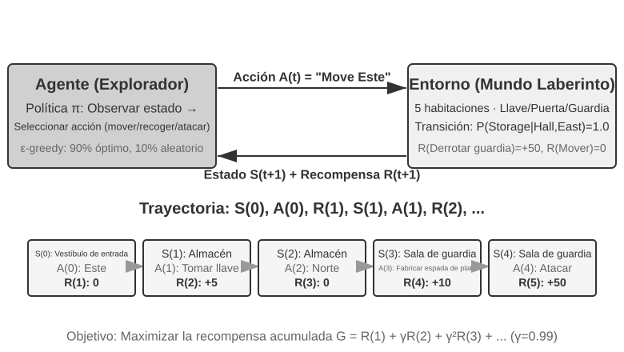
La interacción genera una trayectoria, es decir, el registro completo de "estado → acción → recompensa → nuevo estado → acción → recompensa...". La calidad de la política se refleja en la calidad de sus trayectorias. La función de valor (Value Function) responde a la pregunta: "si me encuentro en este estado y continúo actuando según la política actual, ¿cuánta recompensa total obtendré al final?". Es similar a un ajedrecista experimentado que, al evaluar una posición, no necesita calcular hasta el último movimiento, sino que estima intuitivamente la probabilidad de victoria. (Cuando la "política actual" se reemplaza por la "política óptima", se obtiene la función de valor óptimo, utilizada más adelante al abordar la Ecuación de Optimidad de Bellman.) La frontera entre el Agente y el entorno sigue un principio conciso: todo aquello que el Agente no pueda modificar libremente pertenece al entorno.
El aprendizaje por refuerzo se distingue del aprendizaje supervisado (que requiere respuestas correctas anotadas) y del aprendizaje no supervisado (que busca patrones ocultos en los datos) por dos rasgos únicos: la búsqueda por ensayo y error (el Agente debe descubrir por sí mismo qué acciones son buenas sin la guía directa de un profesor) y la recompensa diferida (el impacto de una acción puede manifestarse muchos pasos después, como el valor de una buena jugada que solo se aprecia al final de la partida). Esto introduce además el dilema clásico entre exploración y explotación (Exploration-Exploitation Tradeoff): seguir siempre el camino conocido impide aprender cosas nuevas, mientras que probar a ciegas todo el tiempo impide llegar a la meta.
Un sistema de aprendizaje por refuerzo consta de cinco elementos clave:
- Espacio de acciones: Define el conjunto de todas las acciones que el Agente puede ejecutar. Las acciones pueden ser discretas (como elegir qué movimiento hacer en un juego de mesa, entre un número finito de opciones) o continuas (como determinar cuántos grados gira la articulación de un robot, expresado en valores numéricos continuos).
- Política: La regla de comportamiento del Agente, que especifica qué hacer en un estado determinado. Puede ser tan simple como una tabla de consulta (al ver el estado A, ejecuta la acción X) o tan compleja como una red neuronal profunda.
- Señal de recompensa: La retroalimentación inmediata provista por el entorno. No obstante, el objetivo del Agente es maximizar la recompensa a largo plazo y no solo la inmediata; esta distinción es vital, al igual que en las inversiones, donde no cuenta solo la fluctuación diaria sino el rendimiento a largo plazo.
- Función de valor: Estima la recompensa total acumulada a futuro partiendo de un estado específico, ayudando al Agente a tomar decisiones acertadas en ausencia de retroalimentación inmediata. Uno de los mayores avances en sesenta años de investigación en RL es el reconocimiento de la posición central de la estimación del valor.
- Modelo del entorno (opcional): Predice la respuesta del entorno ante las acciones del Agente. Los métodos que disponen de un modelo del entorno se denominan métodos basados en modelo (aprenden a predecir los cambios del entorno antes de planificar), mientras que los que carecen de él se llaman métodos libres de modelo (aprenden directamente de la experiencia sin predecir el entorno).
La Tabla 7-3 compara los componentes clave de diversos sistemas de Agentes, revelando la universalidad del concepto de Agente y destacando la diferencia en el espacio de acciones entre los Agentes de RL tradicionales y los Agentes de LLM modernos.
Tabla 7-3 Comparación de elementos clave en diferentes sistemas de Agentes
| Tipo de Agente | Entorno | Espacio de acciones | Señal de recompensa |
|---|---|---|---|
| Cazuela de gacela recién nacida | Terreno, gravedad, postura corporal | Continuo de alta dimensión (contracción de grupos musculares) | Equilibrio (+), Caída (-) |
| Robot aspirador | Distribución de la habitación, nivel de batería | Discreto (dirección, succión, recarga) | Área limpia (+), Batería agotada (-) |
| Gran Maestro de Ajedrez | Estado del tablero, límite de tiempo | Discreto finito (movimientos legales) | Victoria (+1), Derrota (-1) |
| Agente de atención al cliente | Historial de diálogo, base de conocimiento | Abierto (pensar, hablar, llamadas a API) | Resolución del problema (+), Tiempo de atención (-) |
| Agente asistente de código | Documentación de requisitos, repositorio de código | Abierto (pensar, buscar, editar, ejecutar) | Pruebas aprobadas (+), Introducción de bugs (-) |
La tabla revela una noción fundamental: los Agentes de RL tradicionales (en juegos de mesa o robótica) operan en espacios de acciones cerrados, mientras que los Agentes modernos basados en LLM (en atención al cliente o asistencia de código) se mueven en espacios de acciones abiertos y casi infinitos, capaces además de utilizar el "pensamiento interno" como una acción especial para elevar sus capacidades.
Dos paradigmas de Agentes: de MDP a LLM+RL¶
La diferencia más sustancial entre ambos paradigmas reside en el espacio de acciones: MDP asume un espacio de acciones finito y cerrado (arriba/abajo/tomar/soltar), mientras que el espacio de acciones de un LLM es una secuencia de lenguaje natural abierta y de explosión combinatoria. Esta discrepancia determina la separación radical entre ambos paradigmas en cuanto al diseño de algoritmos, la eficiencia de muestra y la capacidad de generalización.
El paradigma tradicional: MDP y Q-learning.
El MDP (Markov Decision Process, Proceso de Decisión de Markov) es el marco matemático del aprendizaje por refuerzo que define el estado, la acción, la recompensa y otros elementos centrales. Su hipótesis central es la propiedad de Márkov: el futuro depende únicamente del estado actual y no del historial previo. Por ejemplo, al jugar al ajedrez, evaluar la posición actual del tablero basta para determinar la mejor jugada, sin requerir revisar cada movimiento previo. Esta suposición simplifica el problema, aunque limita el modelado de dependencias históricas.
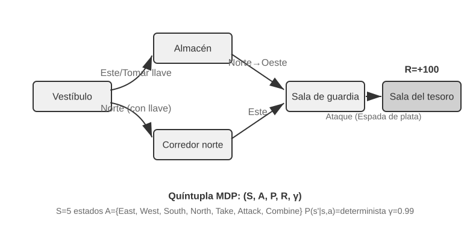
El rasgo distintivo del Agente de RL tradicional es su espacio de acciones cerrado: todas las acciones posibles forman un conjunto finito predefinido. Los Agentes clásicos de juegos de mesa constituyen el ejemplo más típico: Go cuenta con 361 posiciones de colocación de fichas que, aunque amplias, son totalmente finitas y deterministas; el ajedrez considera reglas de movimiento para distintas piezas, pero sus acciones siguen siendo enumerables. Los juegos de Atari ofrecen solo entre unos pocos y una docena de acciones discretas. Los Agentes robóticos representan espacios de acciones continuos pero acotados: los ángulos de las articulaciones, la velocidad y la fuerza de agarre son valores continuos, pero con límites físicos precisos (ángulo máximo de rotación, par máximo, límite de velocidad), cuya dimensión viene dada por los grados de libertad del robot.
Esta naturaleza cerrada aporta ventajas de cálculo: se pueden enumerar todas las acciones para evaluarlas individualmente, facilitando la programación dinámica y la búsqueda en árbol de Monte Carlo, permitiendo aproximar la función de valor de acción mediante tablas o funciones simples. Sin embargo, restringe la expresividad y la generalización. El Agente de RL tradicional parte desde cero y aprende mediante puro ensayo y error: inicia con una política aleatoria, recopila experiencia, actualiza la función de valor o la política, e itera hasta la convergencia.
En este marco, uno de los algoritmos más fundamentales es Q-learning. Este mantiene una estimación de valor para cada combinación "estado-acción": al ejecutar la acción \(a\) en el estado \(s\) y continuar actuando según la política óptima en el futuro, ¿cuánta recompensa total se obtendrá? Intuitivamente, la calidad de una acción depende del retorno inmediato que genera más la estimación de "cuán bueno es el siguiente estado al que conduce".
Expresando esta intuición en forma de ecuación, obtenemos la relación recursiva fundamental de la Ecuación de Bellman de los libros de texto de RL: el valor real de una acción = la recompensa inmediata de este paso + el valor futuro máximo que se puede obtener al alcanzar el siguiente estado:
Donde \(r\) es la recompensa inmediata, \(s'\) es el siguiente estado alcanzado tras ejecutar la acción (expresado aquí de forma determinista para favorecer la intuición; en entornos estocásticos se toma la esperanza sobre el siguiente estado \(s'\)), y \(\gamma \in [0, 1)\) es el factor de descuento, que determina el peso asignado al futuro: cuanto más cercano a 1 sea \(\gamma\), mayor importancia se otorga al retorno a largo plazo; cuanto más cercano a 0, más se atiende a lo inmediato. La "recompensa acumulada" mencionada previamente es la suma descontada paso a paso \(\sum_{t} \gamma^{t} r_t\). Tras cada acción, el algoritmo ajusta ligeramente el valor estimado antiguo hacia el "resultado real acontecido"; este paradigma de "corregir estimaciones antiguas con resultados reales de un solo paso" se denomina Aprendizaje de Diferencias Temporales (Temporal-Difference Learning, TD learning), el cual, tras miles de iteraciones de ensayo y error, converge progresivamente hacia el valor real.
Las dos figuras siguientes ilustran el proceso de exploración de Q-learning en un Grid World y la convergencia gradual de los valores Q.
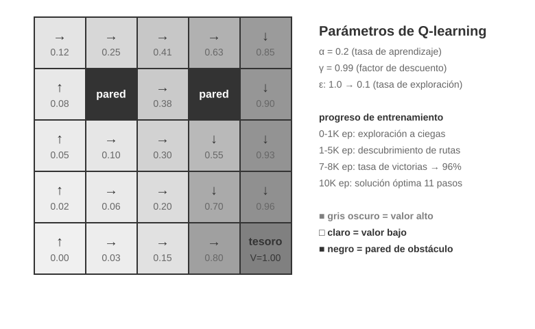
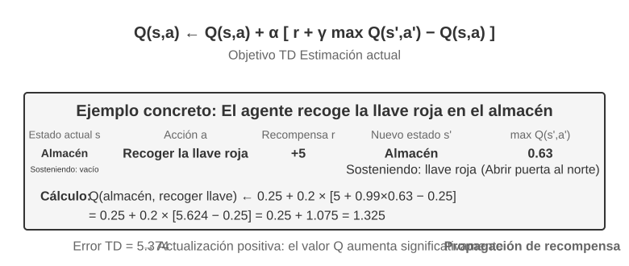
Q-learning es un método específico fuera de la política (Off-Policy): puede aprender la política óptima a partir de datos generados por cualquier política (incluida la exploración aleatoria). Las definiciones estrictas de métodos en la política y fuera de la política, y su correspondencia en el post-entrenamiento de LLM, se abordan en la sección "Comparación de algoritmos de aprendizaje por refuerzo".
Experimento 7-1 ★: Rendimiento de Q-learning en el Juego de Búsqueda del Tesoro
Para verificar las características y limitaciones de Q-learning, diseñamos un entorno de juego de búsqueda del tesoro. Este entorno presenta varios desafíos clave: las mecánicas ocultas exigen que el Agente descubra por sí mismo la correspondencia entre llaves y puertas, los efectos de las armas y las reglas de combinación de objetos; las dependencias de múltiples pasos implican que completar la tarea requiere una secuencia correcta de acciones (con una solución óptima de 11 pasos); y las recompensas esporádicas (sparse rewards) significan que solo las acciones críticas y la victoria final otorgan recompensas significativas, sin retroalimentación en la mayoría de los pasos intermedios.
El Agente de Q-learning utiliza una configuración estándar de parámetros bajo una política de exploración \(\epsilon\)-greedy (elige la acción óptima actual la mayor parte del tiempo y ocasionalmente prueba opciones aleatorias, reduciendo gradualmente la exploración aleatoria conforme avanza el entrenamiento).
La curva de aprendizaje muestra rasgos característicos (un episodio se refiere a una partida completa, desde el inicio hasta la victoria o derrota): - Primeros 1.000 episodios: 0% de tasa de victoria, la tabla Q contiene solo 124 estados; el Agente explora a ciegas. - Primeros 5.000 episodios: Aún sin victorias estables, la tabla Q alcanza 133 estados. - Episodios 7.000 a 8.000: La tasa de victoria asciende del 34% al 96%. - 10.000 episodios: 100% de tasa de victoria, la tabla Q registra 145 estados, encontrando la solución óptima de 11 pasos.
Todo el entrenamiento toma menos de 10 segundos (debido a una eficiencia de simulación extremadamente alta), pero requiere casi 10.000 intentos completos. Esto ilustra la característica central de Q-learning: necesita una exploración aleatoria masiva para encontrar por casualidad el camino completo, y la propagación de la señal de valor es muy lenta, requiriendo refuerzo iterativo. El aprendizaje simbólico puro sin conocimiento previo solo puede recurrir a la búsqueda por fuerza bruta en el espacio de estados.
En un simulador de juego, 10.000 intentos toman solo 10 segundos, con un costo insignificante. Sin embargo, en escenarios reales de Agentes, donde cada llamada telefónica cuesta dinero, cada interacción con el navegador tiene latencia y cada decisión errónea puede acarrear consecuencias irreversibles, 10.000 intentos son absolutamente inaceptables. Esta es la razón por la cual los Agentes modernos han migrado hacia métodos basados en LLM: aprovechar el conocimiento acumulado en el pre-entrenamiento para tomar decisiones efectivas con un número mínimo de interacciones.
Las limitaciones fundamentales de MDP son tres: baja eficiencia de muestra (requiere interacciones masivas para aprender tareas simples), escasa generalización (el conocimiento adquirido en un entorno es difícil de transferir a otro) e incapacidad para aprovechar conocimientos previos (cada nueva tarea se aprende desde cero). Cuando se enfrentan al lenguaje natural o a espacios de estados complejos como la visión de alta dimensión, estas limitaciones se vuelven críticas.
El paradigma moderno: Agentes basados en LLM+RL.
Los grandes modelos de lenguaje han introducido un paradigma de Agente totalmente nuevo, transformando radicalmente la forma de construir Agentes, especialmente en lo relativo al diseño del espacio de acciones.
Un Agente de RL tradicional solo puede obtener retroalimentación modificando el entorno: dar el siguiente paso en el ajedrez o avanzar en el laberinto. Sin embargo, un LLM introduce un tipo de acción completamente nuevo: el pensamiento interno. El pensamiento no altera el mundo exterior, pero mejora sustancialmente la calidad de la acción final. Este cambio lo transforma todo: el espacio de acciones del Agente ya no es solo "qué hacer", sino también "cuánto tiempo pensar y qué pensar".
La innovación más relevante es incorporar el pensamiento (Thinking) como una acción especial dentro del espacio de acciones. En el RL tradicional, el Agente solo puede ejecutar acciones externas que alteran el estado del entorno (moverse, atacar, recoger); en un Agente basado en LLM, el pensamiento interno se convierte en un componente central del espacio de acciones: no cambia directamente el entorno externo, no ofrece recompensa inmediata, se puede ejecutar casi sin límite de veces y su costo es relativamente bajo.
El RL tradicional tiene dificultades para gestionar este tipo de acciones debido a que el espacio de exploración es excesivamente amplio y carece de estructura: un Agente que aprende desde cero es como alguien con los ojos vendados buscando un tesoro en el desierto, chocando al azar. Un LLM es distinto. Mediante el pre-entrenamiento en textos masivos, ha internalizado las reglas de pensamiento estructuradas por la humanidad: para resolver problemas matemáticos sigue "identificar condiciones → recordar fórmulas → calcular paso a paso", y para escribir código sigue "comprender requisitos → diseñar estructura → implementar detalles". Esto permite que el pensamiento del LLM avance por rutas estructuradas, comprimiendo drásticamente el espacio de búsqueda. Por ello, incluso sin entrenamiento adicional en RL, un LLM pre-entrenado puede generar cadenas de pensamiento (Chain of Thought, CoT) con lógica básica. Esta lógica proviene de los vastos datos de pensamiento humano en el corpus de pre-entrenamiento (soluciones matemáticas, comentarios de código, debates), donde el modelo aprende implícitamente mediante la predicción del siguiente token "cuál debe ser la estructura de un razonamiento".
El post-entrenamiento con RL enseña al LLM a emplear estas reglas de forma más eficiente mediante recompensas externas. La estructura del lenguaje ofrece además una recompensa interna implícita: las cadenas de pensamiento lógicas y coherentes (como "dado que se requiere convertir divisas a dólares, el primer paso es consultar el tipo de cambio") tienen una alta probabilidad de generación, mientras que las desorganizadas ("dado que se requiere convertir divisas, primero consultamos el clima") tienen una probabilidad extremadamente baja, guiando de forma natural al modelo hacia rutas razonables.
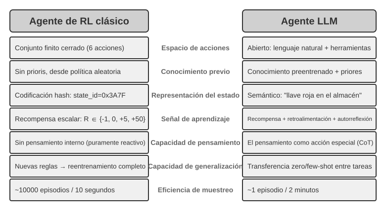
Esta capacidad de pensamiento basada en reglas lingüísticas internas permite que los Agentes de LLM comprendan instrucciones no vistas previamente (generalización zero-shot) y se adapten a nuevas tareas con muy pocos ejemplos (adaptación few-shot), lo cual contrasta totalmente con la necesidad de ensayo y error masivo en los MDP tradicionales. Además, el nuevo paradigma posee capacidades de generalización combinatoria (recombinar conceptos conocidos ante situaciones nuevas), aprendizaje en contexto (adaptación rápida mediante prompts y ejemplos) y comprensión multimodal (integrar de forma natural visión, lenguaje y acciones). Es importante señalar que el efecto del aprendizaje en contexto (generalización zero-shot, adaptación few-shot) y su mecanismo interno son dos aspectos distintos: el mecanismo de atención funciona más como una recuperación que como un razonamiento puro (como se analizó en el Capítulo 2), pero esto no impide que genere efectos prácticos potentes en la adaptación a tareas.
La evolución desde un espacio de acciones cerrado a uno abierto refleja la transformación fundamental en el paradigma de los AI Agents. Además del pensamiento interno, la diversidad de parámetros de las herramientas (consultas en lenguaje natural, código de programación, JSON complejo, contenido multimodal) hace que el espacio de acciones real sea prácticamente infinito: un intérprete de código puede teóricamente ejecutar cualquier tarea computable, y una herramienta de búsqueda puede explorar el espacio de información de todo internet. Esto aporta nuevas oportunidades (el Agente puede abordar tareas inéditas y resolver problemas complejos combinando herramientas básicas) y también nuevos desafíos (cómo definir y optimizar funciones de recompensa en entornos abiertos y cómo buscar de manera eficiente en espacios de acciones infinitos).
Tomando como ejemplo modelos como Kimi K3, optimizados para la llamada a herramientas y el razonamiento en cadena larga, se observa la dirección típica del paradigma LLM+RL: sobre la base de un pre-entrenamiento del lenguaje a gran escala, se refuerza mediante post-entrenamiento la descomposición de problemas, la llamada a herramientas y la autocorrección. OpenVLA (detallado en el Capítulo 9) ilustra el paradigma de arquitectura VLA (Visión-Lenguaje-Acción) en la era de los LLM: el codificador visual procesa las observaciones del entorno, el modelo de lenguaje comprende las instrucciones y razona, y el decodificador de acciones genera señales de control, logrando control condicionado por lenguaje y generalización entre tareas. Conviene aclarar que OpenVLA se entrena mediante aprendizaje por imitación (clonación de comportamiento) sobre casi un millón de trayectorias de demostración robóticas, siendo de naturaleza SFT y no RL; la representación real de la introducción de RL en robótica para optimizar aún más mediante recompensas sobre arquitecturas VLA se analiza en el Experimento 7-13 de SimpleVLA-RL más adelante.
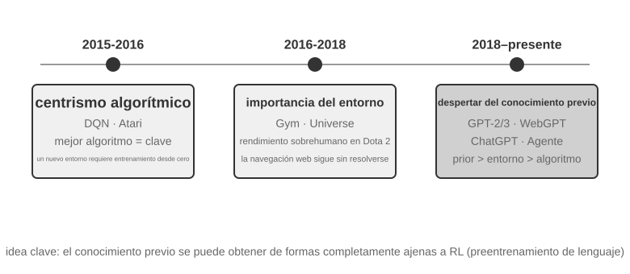
El camino de exploración de OpenAI (registrado en detalle por Yao Shunyu, profesor asistente en Princeton y autor del artículo de ReAct, en The Second Half) revela una importante evolución conceptual. Primera etapa (2015-2016) El centralismo del algoritmo: Se creía que el factor determinante eran los mejores algoritmos, logrando avances en entornos estándar como Atari, pero requiriendo entrenar desde cero al cambiar de entorno. Segunda etapa (2016-2018) La importancia del entorno: Gym estandarizó diversas tareas, mientras que Universe y World of Bits intentaron transformar todo internet en un entorno de entrenamiento para RL; Dota 2 buscó un rendimiento sobrehumano en entornos complejos específicos. La idea era clara, pero el uso general de ordenadores y la navegación web no lograron avances definitivos.
Tercera etapa (2018 al presente) El despertar de los conocimientos previos: GPT-2 y GPT-3 demostraron el poder del pre-entrenamiento del lenguaje, y WebGPT y ChatGPT probaron que estos conocimientos previos podían transformarse en Agentes prácticos. El descubrimiento más valioso fue: los conocimientos previos se pueden adquirir mediante métodos totalmente ajenos al RL. Esta es una verdad contraintuitiva: las prioridades de los investigadores de RL durante décadas podrían haber estado invertidas; la jerarquía real no es algoritmo > entorno > conocimientos previos, sino conocimientos previos > entorno > algoritmo.
Experimento 7-2 ★★: Estudio Comparativo entre RL Tradicional y Agente LLM
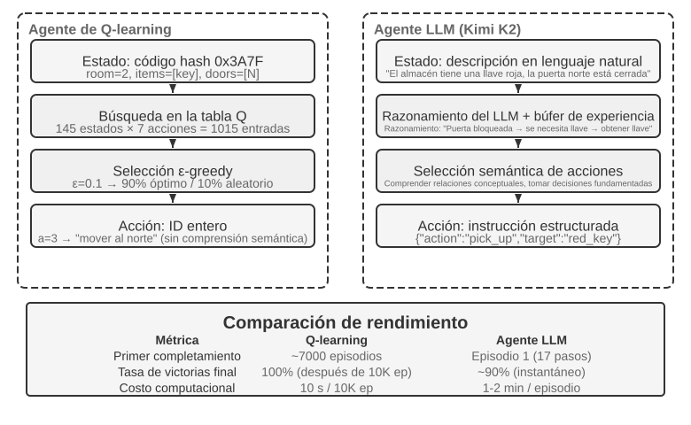
Evaluamos en el mismo juego de búsqueda del tesoro a Q-learning frente a un Agente LLM (Kimi K3, manteniendo un búfer de experiencia de hasta 50 entradas). El resultado fue impactante: el Agente LLM completó el juego en la primera partida en solo 18 pasos.
Etapa inicial (exploración con propósito): Recoge la espada oxidada ("un arma es mejor que ir con las manos vacías"), explora el mapa de forma sistemática y, tras descubrir que la puerta norte está cerrada, razona que "se necesita buscar una llave", pasando a explorar el almacén donde obtiene sucesivamente la llave roja y el cristal mágico. Etapa intermedia (comprensión de mecánicas y síntesis activa): Comprende la regla de "uso automático de la llave" y prevé que la espada oxidada no bastará contra el guardia, sintetizando activamente una espada de plata en el paso 8. Etapa final (ejecución y corrección): Avanza hacia el norte con la espada de plata, derrota al guardia fuerte en el paso 13 (con uno o dos intentos ineficientes intermedios) y obtiene el tesoro del dragón en el paso 18.
Esto evidencia la diferencia sustancial entre la comprensión semántica y el mapeo simbólico. El Agente LLM comprendió la estructura conceptual del juego, respaldando cada paso en una lógica y un propósito. Para Q-learning, "puerta", "llave" y "espada" son meras combinaciones de símbolos sin significado, que solo pueden relacionarse lentamente tras un aprendizaje estadístico masivo.
El costo de cálculo plantea una paradoja interesante: Q-learning ejecuta 10.000 partidas en solo 10 segundos, mientras que el Agente LLM requiere entre 1 y 2 minutos por partida. Sin embargo, en tareas reales, el costo en tiempo, dinero y riesgo por interacción supera con creces el costo computacional puro, por lo que evaluar únicamente el tiempo de GPU no es justo. La noción clave es: el éxito del Agente LLM no se debe a un "algoritmo de aprendizaje" superior, sino a que incorpora una cantidad masiva de conocimientos previos. Ante un cambio en las reglas del juego, Q-learning requiere reentrenarse por completo, mientras que el Agente LLM puede adaptarse directamente mediante razonamiento. Esto establece un principio práctico de diseño: en escenarios con costos de simulación bajos y alta repetibilidad, el RL tradicional conserva su valor; en escenarios reales con altos costos de interacción y necesidad de adaptación rápida, la eficiencia de muestra del Agente LLM resulta mucho más práctica.
En cuanto a cómo colaboran la adaptación en contexto, la actualización de artefactos externos y la actualización de parámetros, el Capítulo 1 ofreció el mapa conceptual, y la sección "Panorama completo" al final de este capítulo retornará sobre este tema. El hilo conductor de este capítulo es el post-entrenamiento: consolidar en los parámetros del modelo aquellas capacidades difíciles de expresar mediante reglas externas.
Fundamentos del Pre-entrenamiento de Modelos [Lectura Opcional]¶
Para entender por qué son efectivas las técnicas de post-entrenamiento, es necesario comprender primero qué se construye durante el pre-entrenamiento. El post-entrenamiento (SFT y RL) optimiza esencialmente dentro del espacio de representación establecido por el pre-entrenamiento; la estructura del conocimiento asentada en el pre-entrenamiento determina el límite superior del post-entrenamiento. Por ello, examinamos los aspectos centrales del pre-entrenamiento a través de tres experimentos: entrenar un modelo de lenguaje de pequeña escala desde cero, extender capacidades visuales e inyectar conocimientos en un nuevo idioma. Los tres experimentos de esta sección son contenidos auxiliares para ayudar al lector a construir una intuición sobre el pre-entrenamiento (es decir, el entrenamiento inicial sobre datos masivos para que el modelo aprenda las reglas básicas del lenguaje y el conocimiento del mundo); aquellos lectores familiarizados con el proceso de pre-entrenamiento pueden omitirlos.
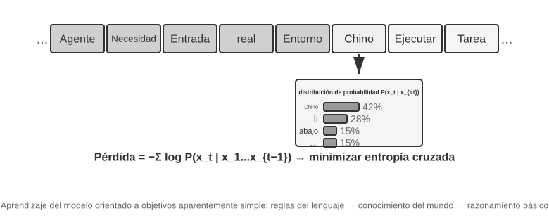
El entrenamiento de modelos de lenguaje sigue un flujo de tres etapas: "tokenización: pre-entrenamiento: post-entrenamiento". La tokenización divide el texto en unidades discretas; por ejemplo, "me gusta programar" podría dividirse en cuatro tokens: "me", "gusta", "progra" y "mar", siendo estos tokens las unidades mínimas que el modelo procesa. La tarea de pre-entrenamiento es conceptualmente simple: mostrar al modelo la primera parte de un texto y pedirle que prediga el siguiente token. El modelo ajusta sus parámetros comparando la diferencia entre su predicción y la respuesta correcta (esta diferencia se denomina pérdida o Loss; cuanto menor sea la pérdida, más precisa es la predicción). Tras entrenarse repetidamente sobre textos masivos, el modelo adquiere gradualmente las reglas del lenguaje, el conocimiento del mundo y capacidades básicas de razonamiento. Al completarse el pre-entrenamiento, el modelo genera texto fluido, pero sus salidas carecen de estructura y le cuesta seguir instrucciones. El post-entrenamiento lo transforma en un asistente práctico mediante SFT (entrenamiento con pares entrada-salida etiquetados) y optimización de preferencias (como DPO, enseñando al modelo a generar respuestas preferidas por los humanos).
Experimento 7-3 ★★: Entrenar un LLM desde Cero: El Poder de la Mejora Algorítmica
Tomando MiniMind 2 (cien millones de parámetros) como caso de estudio, se completa el flujo de entrenamiento sobre una GPU de consumo. Al introducir dos optimizaciones algorítmicas (QK Norm y el optimizador Muon), la velocidad de convergencia aumenta 3 veces y la calidad de generación mejora notablemente, con un costo de ejecución extremadamente bajo: alrededor de 14 horas de entrenamiento total y un costo de unos 34 dólares.
Efectos en cada etapa de entrenamiento: Tras el pre-entrenamiento, el modelo responde a preguntas fácticas como "¿cuál es la montaña más alta del mundo?", pero con un formato no estandarizado; tras el SFT, el seguimiento de instrucciones y el formato de salida mejoran significativamente, organizando la respuesta según lo esperado; la optimización de preferencias reduce aún más los errores fácticos y las expresiones poco naturales. Un modelo de cien millones de parámetros conserva limitaciones evidentes (propenso a fallar en problemas complejos), pero la lección es: bajo un presupuesto pequeño y fijo, las mejoras algorítmicas ofrecen una relación costo-beneficio muy superior a simplemente aumentar la escala.
Experimento 7-4 ★★: Entrenar tu propio VLM
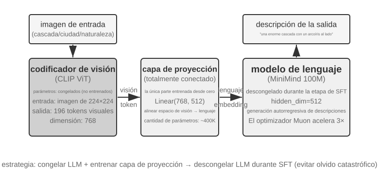
Un VLM unifica la percepción visual y la comprensión del lenguaje en un único modelo, siendo su desafío central la alineación entre modalidades: lograr que lo que se "ve" se corresponda con lo que se "dice". La arquitectura consta de tres componentes: un codificador visual (como CLIP, con parámetros congelados) que extrae características semánticas de la imagen; una capa de proyección (ligera, el único componente entrenado desde cero) que actúa como "traductor" entre las características visuales y el modelo de lenguaje, mapeando las representaciones visuales a un espacio comprensible por el LLM; y el modelo de lenguaje que genera el texto descriptivo. El entrenamiento adopta la estrategia de "congelar el LLM + entrenar únicamente la capa de proyección" para evitar el olvido catastrófico (Catastrophic Forgetting, es decir, olvidar habilidades previas al aprender otras nuevas); tras alinear el pre-entrenamiento, se descongela el LLM y se aplica SFT con pares de imagen-descripción de alta calidad, mejorando considerablemente el nivel de detalle y la precisión de la descripción.
Este experimento revela el paradigma básico de entrenamiento de modelos multimodales: reutilizar los logros del pre-entrenamiento unimodal y lograr la alineación multimodal entrenando una capa de proyección ligera, un enfoque eficiente y escalable, aunque la capacidad expresiva limitada de la capa de proyección puede convertirse en un cuello de botella para la comprensión profunda. Extendiendo este mismo esquema de "codificador visual + capa de proyección + LLM" un paso más allá para permitir que el modelo genere acciones, se llega al modelo VLA (Visión-Lenguaje-Acción) que se aborda en el Capítulo 9.
Experimento 7-5 ★★: Continuar el pre-entrenamiento para aprender un nuevo idioma
Tomando como base Mistral 7B v0.3 (pre-entrenado principalmente en inglés, con casi nula comprensión del coreano), se inyecta la capacidad del idioma coreano continuando el pre-entrenamiento con la Wikipedia en coreano: realizar un entrenamiento no supervisado sobre un modelo pre-entrenado utilizando datos en el nuevo idioma. El modelo ya posee capacidad de modelado del lenguaje general y solo necesita adaptarse a la nueva distribución de datos, con un costo muy inferior al de entrenar desde cero. El punto clave de ingeniería es utilizar datos mixtos (aproximadamente 80% coreano + 20% inglés) para mitigar el olvido catastrófico: una proporción excesiva del idioma objetivo provoca la degradación del idioma original, mientras que una proporción demasiado baja genera una eficiencia de aprendizaje insuficiente. Finalmente, se aplica SFT con datos de instrucciones en coreano para obtener una capacidad de diálogo práctica en dicho idioma. La conclusión de este experimento se reutilizará al final del capítulo: para que un modelo memorice una gran cantidad de nuevos conocimientos de dominio, se debe recurrir a continuar el pre-entrenamiento y no al SFT.
Los tres experimentos de pre-entrenamiento revelan una regla común: bajo restricciones presupuestarias, la mejora algorítmica y la innovación arquitectónica ofrecen una mejor relación costo-beneficio que el simple aumento de escala. Lo que es más importante, el pre-entrenamiento otorga al modelo conocimientos descriptivos y capacidad de modelado del lenguaje, pero carece de un seguimiento de instrucciones estructurado y de un comportamiento orientado a tareas, que es precisamente el vacío que el SFT debe llenar.
Con las capacidades básicas del pre-entrenamiento listas, el siguiente paso es transformar el modelo general en un Agente práctico a través del post-entrenamiento. La primera etapa del post-entrenamiento es el Ajuste Fino Supervisado (SFT).
SFT (Ajuste Fino Supervisado)¶
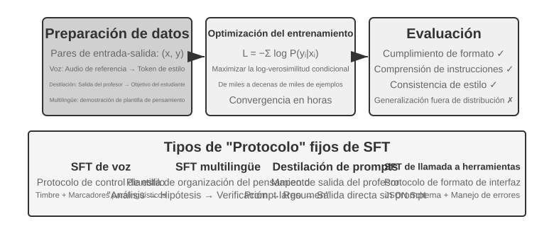
En la Sección 7.1 se explicó la esencia del SFT ("predecir el siguiente token" con datos modificados y cálculo de pérdida enfocado en la respuesta). Esta sección utiliza cuatro experimentos para examinar qué consolida concretamente en diversas tareas este mecanismo de "escribir mapeos y protocolos estables en los parámetros". El valor central del SFT no reside en inyectar nuevos conocimientos, sino en consolidar protocolos: escribir en los parámetros las relaciones de mapeo, los formatos de interacción y las normas de estilo, de modo que durante la inferencia se generen salidas conforme a lo esperado sin requerir prompts extensos. Por lo general, bastan de unos pocos miles a decenas de miles de ejemplos de alta calidad para establecer la capacidad básica de diálogo y el seguimiento de instrucciones.
El costo de esta alta eficiencia es una fuerte dependencia hacia la distribución de entrenamiento: el SFT tiende a memorizar más que a generalizar, por lo que su rendimiento suele caer notablemente ante situaciones no vistas en el entrenamiento. Los siguientes experimentos ilustrarán desde distintos ángulos este proceso de "consolidar protocolos".
Antes de poner en práctica el SFT, surge una pregunta operativa inevitable: ¿de dónde provienen los datos de SFT? En la industria existen esencialmente tres vías: demostraciones de expertos humanos (ofrecen el techo de calidad más alto, pero son costosas y lentas, ideales como datos semilla para definir formato y estilo); generación por modelos profesores —es decir, datos sintéticos, donde un modelo fuerte genera masivamente pares de entrada-salida que se filtran y destilan al estudiante; los experimentos 7-8 y 7-9 siguen este camino); y auto-bootstrapping del modelo (el modelo genera múltiples candidatos para la misma pregunta y utiliza un verificador para filtrar las muestras correctas con las que entrenarse a sí mismo, conocido como ajuste fino con muestreo por rechazo, ver Experimento 7-9). Estas tres vías suelen combinarse: primero se usan pocas semillas humanas para fijar el formato, luego un modelo profesor amplía la escala y finalmente el muestreo por rechazo equipara la calidad. Independientemente de la vía elegida, el proceso de construcción es similar: definir primero la distribución de la tarea y el schema de salida, generar candidatos masivamente, realizar un filtrado de calidad mediante reglas, formato e inspección manual, y finalmente eliminar duplicados y equilibrar proporciones. No hace falta obsesionarse con la cantidad: unos pocos miles a decenas de miles de datos limpios suelen bastar para consolidar el protocolo; en lugar de acumular cien mil datos sucios, es preferible pulir diez mil datos limpios, ya que el SFT escribirá fielmente cada ruido de los datos en los parámetros.
Experimento 7-6 ★★★: SFT de Voz: De la Clonación de Voz al Modelado Paralingüístico
[Experimento Extendido]Tomando como objetos de estudio Orpheus (clonación de voz basada en prompt de contexto) y Sesame (modelado de marcas paralingüísticas), se muestra cómo escribir el estilo de voz y los hábitos expresivos en los parámetros. Ambos siguen enfoques distintos:
- Orpheus: Comprime la forma de onda de audio en una secuencia de tokens y, mediante la concatenación del audio de referencia del mismo hablante, enseña al modelo a "hablar con la voz de esa persona", logrando consistencia de timbre entre oraciones.
- Sesame: Abstrae fenómenos paralingüísticos como risas o suspiros en tokens especiales como
<laugh>o<sigh>, entrenando al modelo para "emitir el sonido correspondiente al detectar la marca".En tareas expresivas, el SFT consolida protocolos de control de estilo y hábitos de expresión estructurada, no conocimientos fácticos ni razonamientos complejos. La clave reside en la diversidad de los datos de entrenamiento y la calidad de la anotación. Modos de falla comunes: la falta de variedad de hablantes en los datos provoca que todos suenen igual; el sobreajuste de marcas (Overfitting, donde el modelo memoriza detalles específicos de las muestras de entrenamiento y empeora ante situaciones nuevas) produce "risas mecánicas".
Experimento 7-7 ★★★: Pensamiento Multilingüe: Permitir que el Modelo Piense en Cualquier Idioma
[Experimento Extendido]La mayoría de los modelos de razonamiento solo piensan en inglés: sin importar en qué idioma preguntes, la cadena de pensamiento interna del modelo ocurre casi siempre en inglés, debido a que las demostraciones de pensamiento de alta calidad en los datos de entrenamiento están escritas principalmente en inglés. El objetivo de este experimento es simple: permitir que el modelo piense en el idioma especificado.
El procedimiento consiste en aplicar SFT sobre gpt-oss-20b: agregar en la instrucción del sistema la línea
reasoning language: German(u otro idioma) y entrenar con ejemplos de pensamiento en varios idiomas como inglés, español y francés. Los datos de entrenamiento no contienen absoluto español ni chino, pero una vez completado el entrenamiento, si se fija el idioma de razonamiento en chino o español, el modelo puede realizar cadenas de pensamiento completas en ese idioma. Esta generalización lingüística zero-shot es el hallazgo más interesante del experimento. Cabe destacar que esto no es una capacidad de generalización propia del SFT: el pre-entrenamiento multilingüe ya ha construido un espacio de representación compartido entre idiomas en el modelo, y el SFT únicamente activa esa capacidad multilingüe preexistente.Experimento 7-8 ★★: Destilación de Prompts: Replicar Capacidades Prácticas con Menor Costo
En aplicaciones reales, para que un modelo complete tareas complejas se suele diseñar un prompt del sistema extenso (de miles o decenas de miles de tokens), lo que incrementa la latencia y el costo en cada llamada. Al usar modelos de razonamiento grandes, los tokens de pensamiento interno elevan aún más el costo. La idea de la destilación de prompts es comprimir el comportamiento de un "profesor de razonamiento con prompt largo" en un "estudiante sin razonamiento y con prompt corto". El profesor genera respuestas de alta calidad bajo el prompt completo y el modo de pensamiento, mientras que los datos de entrenamiento conservan solo la entrada del usuario y la conclusión final, descartando el prompt extenso y el proceso de pensamiento intermedio. El estudiante aprende a "ofrecer directamente la conclusión", aproximándose tras la destilación a la calidad de salida del profesor ante la misma entrada, mientras que la latencia y el costo se reducen drásticamente al no procesar prompts ni tokens de pensamiento extensos.
La destilación se puede realizar en dos dimensiones: de "grande a pequeño" (usando un modelo mediano o pequeño para reemplazar al grande, equilibrando costo y calidad) y de "pensamiento a no-pensamiento" (plegando la CoT explícita en conocimiento parametrizado implícito a igual escala, logrando un aumento de 20 a 30 veces en la velocidad de respuesta). Ambas dimensiones no son excluyentes y se usan conjuntamente en entornos de producción. Cabe señalar que la destilación heredará los límites del profesor: si el profesor comete errores sistemáticos en distribuciones poco comunes, el estudiante codificará de forma rígida esos errores; si el profesor depende de herramientas para garantizar la precisión, la pura destilación de salidas perderá la robustez aportada por las herramientas. Lección de ingeniería: cuando la forma del producto es estable, la distribución de entrada es predecible y las restricciones de costo son marcadas, la destilación de prompts es un excelente medio de optimización; en fases de exploración o cuando la tarea no está definida, conservar el pensamiento explícito y la ingeniería de prompts editable sigue siendo el núcleo para iterar rápidamente.
Experimento 7-9 ★★★: Destilación de Cadena de Pensamiento (Chain of Thought, CoT)
[Experimento Extendido]Si bien la destilación de prompts descarta el proceso de pensamiento, la destilación de CoT hace lo contrario: transfiere la trayectoria completa de pensamiento del modelo profesor fuerte al modelo estudiante. Aplicar destilación CoT a un modelo profesor potente permite recuperar entre el 70% y el 80% de su capacidad en un estudiante de igual escala de parámetros. Para equipos que no buscan desplazar el estado del arte pero requieren modelos soberanos y controlables, esta es la estrategia de seguimiento más pragmática. La serie de modelos pequeños destilados publicados junto a DeepSeek-R1 (aplicando SFT sobre series como Qwen y Llama con las trayectorias de R1) representa exactamente esta ruta.
Contexto: El fenómeno del "Muro del Pensamiento". Algunos modelos de razonamiento de código cerrado (como las series o1 de OpenAI o Gemini) generan cadenas de pensamiento internas, pero el usuario no ve el proceso de pensamiento original: los proveedores suelen resumir o modificar la CoT antes de mostrarla por razones de protección de propiedad intelectual, seguridad y experiencia de producto, ocultando tras la API el proceso original más valioso. Por ello, este experimento selecciona modelos de razonamiento de código abierto como profesores: modelos como DeepSeek V4, Kimi K3 o GLM 5.2 publican directamente la cadena de pensamiento completa, haciendo viable la destilación técnica y legalmente (verificando siempre los términos de licencia sobre los derivados de destilación).
Existe una apreciación muy práctica e importante: para la inmensa mayoría de quienes realizan post-entrenamiento, no es necesario destilar las cadenas de pensamiento de modelos de código cerrado. La brecha entre los modelos de código abierto más avanzados y los modelos de código cerrado SOTA no es tan amplia como se piensa; el modelo profesor solo necesita ser "claramente superior al estudiante", no requiere ser "el número uno del mundo". Si vas a realizar post-entrenamiento sobre modelos de escala igual o inferior a 200B, usar un modelo SOTA de código abierto como profesor resulta totalmente suficiente.
Diseño experimental: Proceso en tres pasos. Primero, recolección de trayectorias: se muestrean preguntas de la distribución de tareas objetivo (como matemáticas o código), se genera la trayectoria completa de "pensamiento + respuesta" con el profesor de código abierto, y se filtran mediante un verificador basado en reglas aquellas trayectorias con respuestas finales incorrectas, evitando que el estudiante imite razonamientos erróneos. Esta práctica de "generar candidatos: filtrar por verificación: conservar solo trayectorias correctas" recibe el nombre de muestreo por rechazo (Rejection Sampling). Construir datos con este enfoque para entrenar SFT se denomina ajuste fino con muestreo por rechazo (Rejection Sampling Fine-Tuning, RFT). Se sitúa entre el SFT puro y el RL: no entrena modelos de recompensa ni calcula gradientes de política, basándose únicamente en "rechazar lo incorrecto y conservar lo correcto entre múltiples muestras" para elevar la calidad de los datos, siendo un medio de construcción de datos de alta relación costo-beneficio para tareas verificables. Segundo paso, entrenamiento SFT: utilizando pares de "pregunta →
<think>trayectoria de pensamiento</think>+ respuesta final", se realiza un SFT estándar sobre el modelo pequeño (por ejemplo, de escala 7B). Tercer paso, evaluación comparativa: se compara en el mismo benchmark al modelo estudiante antes y después de la destilación frente al modelo profesor, midiendo la proporción de capacidad recuperada.Criterio de aceptación: El modelo estudiante destilado muestra mejoras significativas en benchmarks de matemáticas/código respecto a su versión previa, y en sus trayectorias aparecen comportamientos de autorreflexión, retroceso y comprobación al estilo del profesor. Asimismo, se debe tener en cuenta el costo de la destilación: el estudiante heredará los errores sistemáticos del profesor y sus hábitos de pensamiento redundantes (esto último puede optimizarse mediante la idea de AdaptThink del Experimento 7-10).
Estos cuatro experimentos comparten un rasgo común: "escribir mapeos y protocolos estables en los parámetros". El SFT de voz consolida el protocolo de control de estilo, el SFT multilingüe consolida la plantilla de organización del pensamiento, y el SFT de destilación consolida el mapeo directo de entrada a salida. Su punto común es un objetivo claro, un formato preciso y un estándar de evaluación estable, lo que permite al SFT obtener ganancias con una eficiencia de muestra extremadamente alta; sin embargo, al cambiar la distribución, la tendencia a memorizar se manifiesta en una caída de rendimiento. Esta es la plasmación experimental de la división entre memorización y generalización explicada en la Sección 7.1.
Cuándo Elegir SFT y Cuándo Elegir RL¶
La Sección 7.1 aclaró la diferencia esencial entre SFT y RL; esta sección responde a una pregunta operativa más concreta: ante una tarea específica, ¿cuál de los dos se debe utilizar? Algunas conclusiones del marco de decisión posterior se verificarán en los experimentos de RL (Experimento 7-10 y 7-11), por lo que el lector puede construir un juicio preliminar y volver a contrastarlo tras leer la sección de RL.
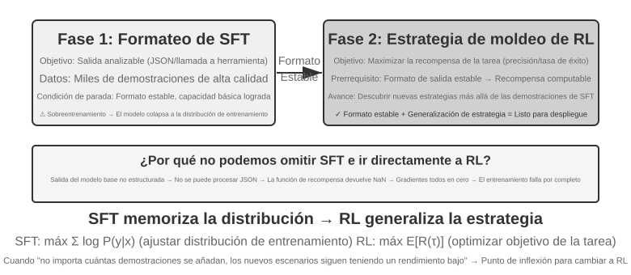
El SFT es adecuado para escenarios con formatos consolidados (salidas JSON, estilo de diálogo), demostraciones de expertos de alta calidad y una alta concordancia entre el entorno de entrenamiento y el de despliegue. Los escenarios donde el RL debe intervenir son distintos: cuando existen diferencias sistemáticas entre el entorno de despliegue y el de entrenamiento (por ejemplo, si durante el entrenamiento las cartas J/Q/K valen 10 y en el despliegue pasan a valer 11/12/13, cambiando la regla; o si en el entrenamiento se usan palos negros y en el despliegue aparecen palos rojos, cambiando la apariencia), cuando se requiere explorar estrategias óptimas (donde las demostraciones de expertos no son necesariamente las mejores) o cuando los costos de anotación son demasiado elevados para ofrecer demostraciones de cada ruta.
La estrategia más sólida es el flujo en dos etapas de "primero SFT, luego RL". El objetivo principal del SFT no es buscar el rendimiento extremo en la tarea, sino establecer la estabilidad del formato de salida: garantizar que el modelo produzca JSON parseable y llamadas a interfaces de herramientas correctas. Solo cuando el formato de salida es estable, la señal de recompensa del RL se puede calcular de forma confiable. Aplicar RL directamente sobre un modelo base sin SFT previo suele conducir al fracaso del entrenamiento debido a salidas desorganizadas que impiden calcular recompensas (esta conclusión tiene sus condiciones de contorno: proviene de la configuración de "modelos base pequeños + requisitos estrictos de salida estructurada", como se vera en el Experimento 7-11). DeepSeek-R1-Zero demostró que un modelo base lo suficientemente fuerte puede omitir el SFT y lograr el éxito con RL directo, haciendo emerger capacidades de autorreflexión y razonamiento de cadena larga, al costo de una legibilidad deficiente y una mezcla de idiomas, siendo este el motivo por el cual DeepSeek reincorporó el "SFT de arranque en frío" en R1. El recorrido de R1 desde Zero al arranque en frío ilustra el principio de "primero la forma, luego el espíritu": el RL puede hacer emerger el "espíritu" (estrategia y razonamiento), pero la "forma" (formato y legibilidad) se establece de manera más rápida y estable mediante SFT.
Ambos enfoques tienen sus costos: el SFT posee alta eficiencia de muestra y rápida convergencia, pero generalización limitada; el RL aprende estrategias transferibles, pero tiene baja eficiencia de muestra y entrenamiento inestable. Un criterio práctico de decisión es: cuando "por más que se incrementen las demostraciones, el rendimiento en nuevos escenarios no aumenta", se ha alcanzado el punto de inflexión para migrar a RL, indicando que la raíz del problema no es la cantidad de demostraciones, sino el objetivo de optimización del SFT.
En las decisiones prácticas, se puede seguir este orden de evaluación:
- Preguntar primero: ¿se requiere post-entrenamiento? Si el problema se resuelve mediante ingeniería de Harness (optimización de prompts, diseño de herramientas, gestión de contexto), no hace falta entrenar el modelo. La mayoría de las aplicaciones de Agentes se sitúan aquí.
- Si se requiere entrenamiento: probar SFT primero. Adecuado para consolidar formatos de salida (schema JSON, formato de llamadas API), consolidar conocimiento protocolar (uso de términos, formato de salidas, hábitos de flujo, es decir, "cómo hablar y cómo actuar") y unificar el estilo (tono, longitud). Nótese que el SFT no es adecuado para inyectar grandes volúmenes de conocimiento fáctico ("qué se sabe"), lo cual requiere continuar el pre-entrenamiento o recurrir a RAG (ver "Panorama completo" al final de este capítulo). El SFT es económico y de rápido impacto.
- Cuando el SFT no sea suficiente: añadir RL. Adecuado cuando se necesita generalizar a nuevos escenarios, explorar estrategias óptimas o cuando el costo de anotación es excesivamente alto. Asegúrate de estabilizar primero el formato de salida con SFT antes de aplicar RL sobre esa base.
RL de Un Solo Turno: Memoria vs Generalización¶
Un escenario de "un solo turno" implica que la tarea se completa en una única interacción: el modelo recibe una entrada, produce una salida y obtiene una recompensa, sin necesidad de mantener un estado a través de múltiples pasos. Esta configuración simplificada nos permite enfocar de forma nítida las diferencias fundamentales entre el SFT y el RL en sus mecanismos de aprendizaje, sin la interferencia de la complejidad multiturno. El escenario de un solo turno ofrece condiciones de experimento comparativo ideales: la misma tarea, el mismo modelo base y el mismo presupuesto computacional, siendo el método de entrenamiento la única variable. El primer experimento muestra cómo el RL aprende la meta-estrategia de "cuándo se debe pensar", mientras que el segundo experimento cuantifica sistemáticamente el fenómeno de "SFT memoriza, RL generaliza" mediante un juego de cartas de razonamiento aritmético.
Antes de abordar los experimentos, construyamos una intuición mínima sobre los algoritmos de RL para comprender la terminología posterior (las fórmulas completas y comparativas se reservan para la sección "Comparación de algoritmos de aprendizaje por refuerzo"). El entrenamiento de RL en este capítulo se basa principalmente en el gradiente de política: se deja que el modelo genere varias respuestas para una misma pregunta; las respuestas con alta recompensa incrementan su probabilidad de aparición, mientras que las de baja recompensa la reducen ("avanzar más en la dirección de alta recompensa y menos en la de baja recompensa"). Para evitar que una actualización individual excesiva desvíe al modelo, el algoritmo dominante PPO recorta el margen de actualización de cada paso (a esto se refiere la mención posterior a "PPO con red de valor", donde la red de valor estimar la línea base para calcular ventajas más precisas); por su parte, GRPO prescinde de entrenar una red de valor y compara las múltiples respuestas de una misma pregunta entre sí para determinar su calidad relativa. Retener esta intuición basta para seguir los dos experimentos siguientes.
Experimento 7-10 ★★: AdaptThink: Aprender "Cuándo No Pensar"
Los grandes modelos de razonamiento (como o1 de OpenAI o DeepSeek-R1) generan cadenas de pensamiento extensas para todas las preguntas, lo que provoca gastos innecesarios en preguntas simples. El experimento verifica primero una intuición: el modo NoThinking (saltarse el pensamiento mediante
<think></think>) ofrece un rendimiento equivalente o superior en problemas sencillos, manifestándose la ventaja de Thinking solo ante problemas complejos.AdaptThink entrena al modelo mediante RL para seleccionar el modo de forma adaptativa. Incorpora dos componentes clave:
- Objetivo de optimización con restricciones: Incentiva el modo NoThinking garantizando al mismo tiempo que el rendimiento general no se degrade.
- Estrategia de muestreo por importancia: Equilibra las muestras de Thinking y NoThinking, resolviendo el problema de arranque en frío provocado por la tendencia inicial del modelo a seleccionar casi siempre Thinking (Arranque en frío se refiere aquí a la fase inicial del entrenamiento donde casi no se generan muestras NoThinking, impidiendo el aprendizaje de esa rama; difiere del contexto de "SFT de arranque en frío" usado en DeepSeek-R1).
El "muestreo por importancia" utilizado aquí es un método estadístico común: cuando la distribución de muestreo está sesgada hacia una categoría, se aplican pesos a las muestras para "corregir" la distribución y lograr que la señal de aprendizaje cubra equitativamente todas las categorías. Los algoritmos PPO y DAPO analizados más adelante reutilizarán este concepto.
Resultados de evaluación: En múltiples benchmarks matemáticos, la longitud de las respuestas se reduce entre un 45% y un 64%, mientras que la precisión se mantiene o incluso se eleva. El modelo aprende a elegir según las características del problema: responde directamente a preguntas simples bien estructuradas y conserva cadenas de pensamiento completas para problemas complejos de múltiples pasos, manteniendo un juicio correcto sobre la dificultad ante tipos de tareas no vistas.
Se complementa con la destilación de prompts formando un sistema dual "rápido-lento": la destilación reduce la proporción de tareas que requieren pensar, y AdaptThink optimiza la estrategia de activación en las tareas restantes, maximizando la eficiencia computacional.
Experimento 7-11 ★★: GeneralPoints: Comparación entre Memoria y Generalización en RL de Un Solo Turno
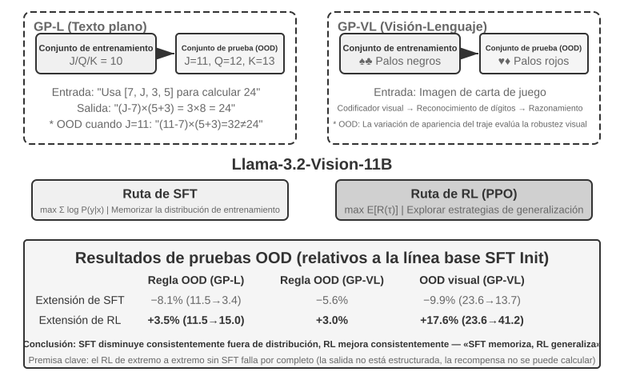
GeneralPoints es un juego de cartas de pensamiento aritmético propuesto por Chu et al. (2025, SFT Memorizes, RL Generalizes, arXiv:2501.17161) para evaluar la capacidad de generalización de los modelos. El objetivo es similar al juego del "24": utilizar los números de cuatro cartas y las operaciones aritméticas elementales para obtener exactamente el número 24, usando cada número una sola vez. Se diseñaron dos variantes: GP-L (texto puro) y GP-VL (imágenes), lo que permite evaluar la generalización de reglas y la generalización visual bajo un mismo marco.
Variante de reglas: Durante el entrenamiento, las cartas J/Q/K valen 10; en la evaluación, pasan a valer 11/12/13 respectivamente, garantizando que el conjunto de prueba contenga combinaciones numéricas no vistas en el entrenamiento para evaluar estrictamente la generalización. Variante visual: El entrenamiento utiliza palos negros (♠♣) y la evaluación palos rojos (♥♦), evaluando la robustez ante cambios de apariencia visual. Basado en Llama-3.2-Vision-11B, sigue el flujo estándar de post-entrenamiento: inicialización con SFT para estabilizar el seguimiento de instrucciones básico, y posterior extensión con SFT y RL bajo el mismo presupuesto computacional (la parte de RL utiliza PPO con red de valor), entrenando únicamente con datos de una sola regla (J/Q/K=10) y evaluando en conjuntos dentro de la distribución (ID) y fuera de la distribución (OOD).
Los resultados revelan una diferencia fundamental. OOD de reglas: El RL en GP-L aumenta un +3,5% (del 11,5% al 15,0%), mientras que el SFT cae un 8,1% (del 11,5% al 3,4%); en GP-VL, el RL sube un +3,0% y el SFT cae un 5,6%. OOD visual: El RL en GP-VL sube un +17,6% (del 23,6% al 41,2%), mientras que el SFT cae un 9,9% (del 23,6% al 13,7%).
Al analizar la precisión de reconocimiento visual, se descubrió que el RL mejoró el codificador visual subyacente mediante la optimización orientada a resultados, estando esta mejora altamente correlacionada con el rendimiento general; en contraste, el SFT sufrió de sobreajuste hacia los patrones de tokens en el proceso de pensamiento, descuidando el aprendizaje de tokens visuales y provocando una caída en la precisión de reconocimiento.
El experimento reveló además la necesidad del SFT para el RL: bajo la configuración evaluada (un modelo base de escala Llama-3.2-Vision-11B con requisitos estrictos de salida estructurada), el RL directo de extremo a extremo sin SFT falló por completo: el modelo base no lograba producir salidas estructuradas y la recompensa no se podía calcular. Cabe señalar que esta es una conclusión condicionada y no una ley universal: modelos base suficientemente potentes pueden omitir el SFT y lograr el éxito mediante RL directo (como se comentó sobre DeepSeek-R1-Zero). Otro hallazgo relevante es que a mayor número de iteraciones de verificación, mejor es la generalización: 10 iteraciones logran +5,99% frente a +0,48% con 1 iteración, demostrando que la expansión del cálculo durante el pensamiento es clave para la generalización del RL.
¿Por qué colapsa el rendimiento del SFT ante un desplazamiento de distribución mientras que el RL mejora? El SFT aprende el mapeo de "al ver esta entrada, genera aquella respuesta": durante el entrenamiento J/Q/K valen 10, por lo que el modelo memoriza el patrón fijo de "tratar J/Q/K como 10"; en la evaluación J vale 11, pero el modelo sigue calculando con 10, cometiendo un error. El RL aprende una estrategia más general sobre "qué proceso de cálculo conduce a la respuesta correcta": al cambiar J a 11, el modelo de RL recalcula con la misma estrategia en lugar de aplicar la respuesta memorizada. Esta es la diferencia esencial entre "memorización" y "generalización".
La contribución central de este experimento radica en cuantificar sistemáticamente el fenómeno de "SFT memoriza, RL generaliza", demostrando que esta regla aplica tanto en la modalidad lingüística pura como en la visual-lingüística, y revelando la relación de sinergia entre SFT y RL: el SFT aporta estabilidad de formato y el RL rompe los límites de la memoria sobre esa base, siendo ambos indispensables. Este paradigma de "primero la forma, luego el espíritu" (dibujar primero con precisión la forma externa y buscar después el espíritu interno) establece las bases metodológicas para tareas posteriores multiturno y multimodales.
RLHF: De Preferencias Humanas a Modelos de Recompensa¶
Los experimentos anteriores compartían un supuesto previo: las tareas tenían una verificación objetiva de corrección (si un cálculo es correcto o si el formato cumple las reglas). Sin embargo, los modelos de diálogo desplegados en la actualidad son "asistentes adecuados y seguros" gracias a otra ruta desarrollada previamente: RLHF (Reinforcement Learning from Human Feedback, Aprendizaje por Refuerzo a partir de Retroalimentación Humana). Comprender RLHF permite entender de dónde proviene la calidad de diálogo y la alineación de seguridad en productos como ChatGPT, además de sentar las bases sobre conceptos como penalizaciones KL y reward hacking.
El pipeline de tres etapas de InstructGPT. El trabajo de InstructGPT de OpenAI 2 estableció el flujo estándar utilizado hasta hoy:
- SFT: Ajustar el modelo pre-entrenado con pares de "instrucción-respuesta" anotados por humanos para construir la capacidad básica de seguimiento de instrucciones (abordado en la sección de SFT).
- Entrenamiento del Modelo de Recompensa (Reward Model, RM): Ante una misma pregunta, el modelo genera múltiples respuestas y anotadores humanos las comparan en pares indicando cuál prefieren. Se entrena un modelo de puntuación con estos pares de preferencia mediante la formulación de Bradley-Terry:
$\(\mathcal{L}_{\text{RM}} = -\log \sigma\big(r(x, y_w) - r(x, y_l)\big)\)$
Donde \(y_w\) es la respuesta preferida, \(y_l\) la respuesta rechazada y \(\sigma\) la función sigmoide. La intuición es simple: hacer que el RM otorgue una puntuación más alta a la respuesta preferida. Se recopilan comparaciones en lugar de puntuaciones absolutas porque a los humanos les resulta difícil asignar puntuaciones absolutas de forma consistente ("esta respuesta vale 7,3 puntos"), mientras que el juicio de "cuál es mejor entre A y B" es mucho más confiable. Conserva la figura del "Modelo de Recompensa": es una línea conductora implícita en este capítulo. Aquí es un evaluador aprendido de preferencias humanas; en la Sección 7.10 verás sus variaciones (ORM enfocado solo en el resultado final, PRM evaluando paso a paso y modelos de recompensa generativos con explicaciones en lenguaje natural), así como un caso especial: cuando la corrección se puede determinar mediante reglas, el "modelo de recompensa" se reduce a un código determinista (que es el enfoque RLVR). Todos responden a la misma pregunta: de dónde proviene la recompensa. 3. Optimización PPO con el RM: Utilizando la puntuación del RM como señal de recompensa, se aplica PPO sobre el modelo SFT para que aprenda a generar respuestas que los humanos consideren preferibles.
Penalización KL: No alejarse del punto de partida (explicación detallada de la divergencia KL). La recompensa real optimizada en RLHF suele restar un término de penalización a la puntuación del RM:
Esta formulación responde a cuatro preguntas habituales:
1. ¿Qué es la divergencia KL y dónde se aplica la penalización? La divergencia KL (Kullback-Leibler Divergence) mide la diferencia entre dos distribuciones de probabilidad: a mayor similitud, menor es la KL (siendo 0 si son idénticas); a mayor diferencia, mayor es la KL. Aquí las dos distribuciones son la política actual \(\pi_\theta\) (el modelo en entrenamiento) y la política de referencia \(\pi_{\text{ref}}\) (el punto de partida, habitualmente el modelo SFT) sobre el "siguiente token" dado el mismo texto previo. El parámetro \(\beta\) controla la intensidad de la penalización (el hiperparámetro kl_coef en los scripts de entrenamiento). En ingeniería, esta penalización se calcula y suma token a token en la recompensa (per-token KL): cada vez que el modelo genera un token, se compara la diferencia de probabilidad con el modelo de referencia en esa posición, deduciendo más recompensa cuanto mayor sea la desviación. Es decir, la KL no es una pérdida independiente, sino que se integra dentro de la señal de recompensa antes de calcular las ventajas en PPO/GRPO.
2. ¿Por qué la dirección sitúa a la política actual primero y a la de referencia después? La divergencia KL es asimétrica, \(\mathrm{KL}(P\|Q)\neq\mathrm{KL}(Q\|P)\), por lo que el orden no es arbitrario. Al escribir \(\mathrm{KL}(\pi_\theta\|\pi_{\text{ref}})\), con la política actual primero, se utiliza matemáticamente la KL inversa (reverse KL). Esta penaliza los casos donde \(\pi_\theta\) asigna una alta probabilidad en lugares donde \(\pi_{\text{ref}}\) asigna una probabilidad casi nula, es decir, penaliza que el modelo se desplace a zonas que el modelo de referencia considera inadecuadas. Esto es exactamente lo deseado: el modelo de referencia (SFT) representa la zona segura de "expresión natural y formato correcto", y la KL inversa mantiene a la política actual cerca de esa zona segura. Si se usara la KL directa \(\mathrm{KL}(\pi_{\text{ref}}\|\pi_\theta)\), se penalizaría que el modelo actual omita patrones presentes en el modelo de referencia, forzando a cubrir todas las expresiones del modelo de referencia, lo cual no es el objetivo de RLHF.
3. ¿Por qué este diseño conduce a la propiedad mode-seeking? La KL inversa tiene una característica central: es de tipo mode-seeking (búsqueda de modos/picos). Como se mencionó en la Sección 7.1, la KL inversa permite al modelo conservar únicamente unos pocos picos de alta recompensa y descartar resueltamente el resto, en lugar de repartir probabilidad entre todas las opciones como hace la máxima verosimilitud en SFT (mass-covering). En RLHF, esto logra seleccionar una o dos formas de respuesta de alta puntuación aprobadas por el RM y emitirlas con estabilidad. Esto explica por qué los modelos tras RL son más "deterministas" y muestran menor diversidad. La combinación de mode-seeking y la restricción de cercanía a la distribución de referencia constituye el secreto de la estabilidad de RLHF.
4. ¿Qué ocurre si no se aplica? La intuición es directa: alejarse demasiado del punto de partida invalida las puntuaciones del modelo de recompensa. El RM se entrenó sobre la distribución de salidas cercana a la política de referencia; si el modelo se optimiza hacia una distribución no vista por el RM, la puntuación se convierte en una extrapolación sin fundamento, donde una alta puntuación deja de equivaler a alta calidad. Por ello, la penalización KL previene dos problemas: el reward hacking (el modelo explota brechas en la recompensa para obtener puntuaciones altas sin resolver realmente la tarea) y el colapso de distribución (salidas degradadas en repeticiones o texto incoherente). Incluso en el entrenamiento RLVR con recompensas verificables, la regularización KL se suele conservar para estabilizar el proceso (aunque algunos trabajos como DAPO u Open-Reasoner-Zero la omiten deliberadamente, cabe notar que el algoritmo GRPO en DeepSeek-R1-Zero contiene explícitamente un término KL).
Los modelos de recompensa pueden ser "sobre-optimizados". El RM es solo un indicador proxy de las preferencias humanas. La Ley de Goodhart establece que cuando un indicador se convierte en el objetivo de optimización, deja de ser un buen indicador: al llevar al extremo la optimización del indicador proxy, su correlación con el objetivo real se distorsiona. Investigaciones de OpenAI 3 midieron sistemáticamente este fenómeno de sobre-optimización del modelo de recompensa (reward model over-optimization): a medida que avanza el entrenamiento de RL, la recompensa proxy (puntuación del RM) aumenta monótonamente, mientras que la calidad real (evaluación humana) sube primero y luego desciende. El modelo aprende a "hacer que el RM otorgue puntuaciones altas" generando respuestas extensas, aduladoras y aparentemente rigurosas pero vacías, en lugar de "responder mejor". Esta es la manifestación concreta de reward hacking en el contexto de RLHF, siendo la penalización KL y la detención temprana (early stopping) los remedios más comunes.
DPO: Omitir el modelo de recompensa explícito. DPO (Direct Preference Optimization, Optimización Directa de Preferencias) 4 parte de la premisa de que, si la combinación de "entrenar RM + PPO" resulta en "aumentar la probabilidad de las respuestas preferidas y reducir la de las rechazadas sin alejarse del modelo de referencia", es posible omitir el RM explícito y convertir los pares de preferencia directamente en una pérdida de clasificación con recompensa implícita. Matemáticamente se demuestra que esto equivale a una optimización de preferencias fuera de línea con restricción KL. El entrenamiento con DPO es tan simple como el SFT: no requiere muestreo en línea, redes de valor ni mantenimiento de un RM independiente. Su limitación es que resulta totalmente fuera de línea, incapaz de explorar nuevos comportamientos más allá de los datos de preferencia, estando su techo determinado por la calidad y cobertura de dichos datos.
Relación entre RLHF y RLVR. En resumen, la diferencia entre ambas rutas reside en de dónde proviene la recompensa: la recompensa de RLHF proviene de un RM aprendido (basado en datos de preferencia humana), mientras que la de RLVR (Reinforcement Learning with Verifiable Rewards) proviene de un verificador basado en reglas (si pasan las pruebas o si la respuesta es correcta). Las tareas de Agentes son en su mayoría verificables, motivo por el cual este capítulo adopta RLVR como hilo principal. Sin embargo, ambos enfoques no son excluyentes sino complementarios: los modelos desplegados en producción los superponen, encargándose RLHF de la calidad de diálogo y seguridad, y RLVR del razonamiento y capacidades del Agente. La evolución hacia modelos de recompensa generativos abordada más adelante representa la convergencia de ambas líneas, utilizando modelos de recompensa entrenables para abordar tareas abiertas no cubiertas por reglas.
Comparación de Algoritmos de Aprendizaje por Refuerzo¶
Los experimentos de un solo turno demostraron las ventajas de generalización del RL, y la sección anterior introdujo la ruta de optimización de preferencias de RLHF. No obstante, los algoritmos específicos utilizados varían. Antes de abordar tareas multiturno más complejas, es necesario repasar sistemáticamente las características y escenarios de aplicación de los principales algoritmos.
Una aclaración fundamental antes de abordar las fórmulas. Esta sección presenta diversos algoritmos y formulaciones, pero recuerda el Hilo Dos de este capítulo: en la industria, basta con saber cómo utilizar y seleccionar los algoritmos de RL existentes (PPO, GRPO, entre otros); lo que realmente determina el éxito son los datos y el entorno, no el algoritmo en sí. Estos algoritmos están integrados en frameworks maduros como veRL o TRL, donde su uso suele requerir solo ajustar unas pocas líneas de configuración. Por ello, el objetivo de esta sección es construir un mapa de selección sobre "qué algoritmo usar en qué escenario"; la parte de formulación matemática (orientada a ingenieros de entrenamiento) se puede omitir sin afectar la lectura posterior. La siguiente sección abordará directamente por qué los datos y el entorno importan más que los algoritmos.
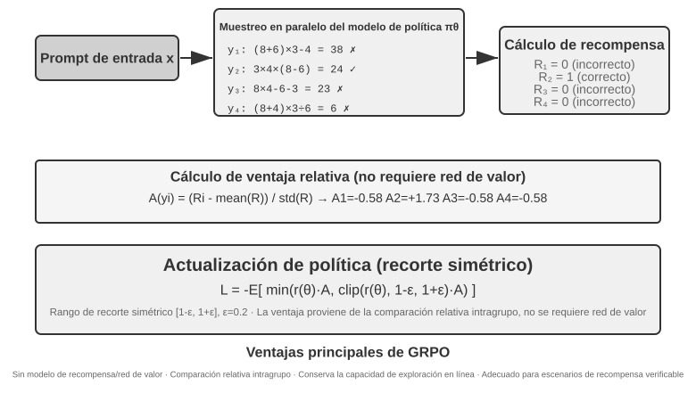
Los escenarios de RL para Agentes basados en LLM difieren sustancialmente del RL tradicional: el Agente debe comprender intenciones en diálogos multiturno, llamar a herramientas, generar salidas estructuradas y realizar razonamientos en cadena larga. Esta toma de decisiones multiobjetivo y multietapa hace que la elección del algoritmo tenga cierta influencia, aunque menor que la calidad de los datos y del entorno.
Desde la perspectiva de la implementación, los algoritmos de RL se dividen en métodos de exploración en línea (exploran nuevas políticas mediante interacción con el entorno) y métodos de optimización fuera de línea (optimizan a partir de datos existentes, de forma más directa y estable). Formalizando la terminología prometida: los métodos en la política (On-Policy) utilizan únicamente datos recién muestreados por la política actual para actualizarse a sí misma, mientras que los métodos fuera de la política (Off-Policy) pueden aprender utilizando datos generados por otras políticas o versiones antiguas (como Q-learning). Clasificando los métodos discutidos en este capítulo según este criterio: el SFT es un aprendizaje por imitación fuera de la política (los datos provienen de profesores o humanos); PPO y GRPO en su forma estándar para LLM son métodos en la política (cada iteración actualiza con rollouts recién muestreados por el modelo actual, donde un rollout implica ejecutar la tarea completa de principio a fin); y DPO es una optimización de preferencias fuera de línea, sin muestreo en línea ni iteración de política en sentido estricto.
La mayoría de estos algoritmos se erigen sobre la misma noción de gradiente de política (Policy Gradient): ajustar los parámetros \(\theta\) de la política en la dirección que incrementa el retorno esperado. Su forma más básica (REINFORCE) se expresa como:
Donde \(\pi_\theta(a\mid s)\) es la política (la probabilidad de seleccionar la acción \(a\) en el estado \(s\)) y \(G\) es el retorno acumulado de la trayectoria (o desde ese paso en adelante): a mayor retorno, más se refuerza la probabilidad de esa acción. Utilizar directamente el retorno \(G\) de toda la trayectoria como peso produce un estimador insesgado pero de alta varianza; por ello se introduce una línea base \(b\) y se utiliza la ventaja (Advantage) \(\hat{A}=G-b\) (cuánto mejor es esta acción respecto al promedio) como peso para reducir la varianza. PPO y GRPO representan dos formas de mejorar la estimación y el uso estable de la ventaja \(\hat{A}\).
PPO utiliza el recorte (clipping) para limitar la magnitud de cada actualización, evitando desviaciones drásticas de la política:
Donde \(\rho\) es la razón de probabilidades entre la política nueva y la antigua, y \(\epsilon\) (por ejemplo, 0,2) limita el margen de ajuste por paso; el concepto "Clip-Higher" abordado más adelante consiste en flexibilizar este límite superior \(1+\epsilon\).
GRPO prescinde de la red de valor (value network, una red neuronal auxiliar en PPO que estima la función de valor paso a paso para obtener ventajas más precisas) y emplea una comparación relativa intra-grupo para estimar la ventaja: para una misma pregunta, se muestrean \(N\) trayectorias con retornos \(r_1,\dots,r_N\), y se define la ventaja de cada una según su rendimiento relativo dentro del grupo:
(donde si todas las recompensas del grupo son idénticas, \(\hat{A}_i = 0\), añadiendo en la práctica una constante pequeña \(\epsilon > 0\) en el denominador por estabilidad numérica). Es decir, "si es mejor que el promedio del grupo es positiva, si es peor es negativa", sin requerir red de valor, siendo esta la razón de su menor costo computacional. Cabe precisar que la formulación anterior omite el término de regularización KL; en el entrenamiento real se suele añadir la penalización KL per-token explicada anteriormente para mantener la política cerca del modelo de referencia.
La Tabla 7-4 resume las características centrales de los métodos principales. Al analizarla, distingue entre dos aspectos que a menudo se confunden: de dónde proviene la recompensa (verificador de reglas, modelo de recompensa aprendido o datos de preferencia humana) y qué algoritmo se usa para optimizar. PPO y GRPO pueden conectarse tanto a verificadores de reglas (RLVR) como a modelos de recompensa (RLHF); su diferencia real radica en el método de estimación de ventaja (red de valor frente a línea base relativa de grupo).
Tabla 7-4 Comparación de métodos de post-entrenamiento y optimización en tiempo de inferencia
| Método | Tipo | Idea central | Ventajas | Desventajas | Escenario aplicable |
|---|---|---|---|---|---|
| REINFORCE | Algoritmo de RL en línea | Usa el retorno final de toda la trayectoria para actualizar la política | Implementación simple | Alta varianza, entrenamiento inestable | Referencia teórica; rara vez usado en su forma pura, aunque sus variantes con línea base (RLOO, REINFORCE++) son comunes; GRPO es esencialmente REINFORCE con línea base de grupo |
| PPO | Algoritmo de RL en línea | Limita la magnitud de cada actualización para evitar desviaciones | Estable, la red de valor ofrece asignación de crédito fina | Requiere entrenar y almacenar una red de valor adicional, sensible a hiperparámetros | Agentes multiturno, asignación de crédito en trayectorias largas |
| GRPO | Algoritmo de RL en línea | Muestra N trayectorias por pregunta y compara la calidad relativa del grupo | Sin red de valor, costo reducido | La ventaja se distribuye por igual en toda la respuesta, asignación de crédito gruesa; requiere variabilidad de recompensas en el grupo | Tareas de un solo turno o trayectorias cortas con buena discriminación de recompensa |
| DPO | Optimización de preferencias fuera de línea | Convierte pares de preferencia directamente en pérdida de clasificación con recompensa implícita | Simple y eficiente, no requiere muestreo en línea | Incapaz de explorar nuevas políticas, limitado por la calidad de los datos fuera de línea | Escenarios con datos de preferencia de alta calidad ya existentes |
| KTO | Optimización de preferencias fuera de línea | Solo requiere etiquetar muestras individuales como "buenas/malas" | Costo de anotación extremadamente bajo | Señal de retroalimentación gruesa | Escenarios con recursos de anotación muy limitados |
| Best-of-N | Método en tiempo de inferencia | Genera N salidas durante la inferencia y selecciona la mejor | No modifica el modelo, simple de aplicar | Multiplica el costo de inferencia, las capacidades no se consolidan en los parámetros | Mejora rápida de calidad en fases tempranas, estimación del techo de ganancia para RL |
Respecto a los algoritmos empleados en los experimentos de este capítulo: GeneralPoints y V-IRL (Experimentos 7-11 y 7-12) utilizan PPO con red de valor; AdaptThink (Experimento 7-10) emplea un objetivo de optimización restringido con muestreo por importancia; ReTool (Experimento 7-15) utiliza PPO modificado sobre veRL; y SimpleVLA (Experimento 7-13) junto con RLVP (Experimento 7-14) se basan en GRPO. En escenarios multiturno, la asignación de crédito es más compleja y cada algoritmo presenta sus fortalezas.
Criterio de selección práctica: Si dispones de señales de recompensa confiables y recursos computacionales → GRPO (simplicidad) o PPO (flexibilidad, asignación de crédito más fina en trayectorias largas); si dispones de datos de preferencia de alta calidad → DPO/KTO (bajo costo); en fases tempranas de exploración → Best-of-N para arranque rápido.
Tras revisar esta tabla, podrías preguntarte qué algoritmo deberías ajustar en detalle. La respuesta suele ser: en la mayoría de los casos, cualquiera funciona bien; no te obsesiones inicialmente con el algoritmo. La siguiente sección aborda precisamente esta cuestión.
Datos y Entorno: Más Importantes que los Algoritmos¶
Esta es la sección más relevante del capítulo y la exposición directa del Hilo Dos. Tras examinar diversos algoritmos, la experiencia en la industria demuestra lo contrario: la importancia de los algoritmos está por detrás de tres elementos fundamentales: la fidelidad del entorno de simulación, la calidad de los datos de entrenamiento y la capacidad del modelo base. Basta con saber utilizar los algoritmos disponibles; lo que genera diferencias reales es la calidad del entorno y de los datos. Esto reafirma la conclusión del Capítulo 6 (la evaluación y el entorno de simulación son las piedras angulares del post-entrenamiento) y el cambio de perspectiva de OpenAI expuesto en la Sección 7.2: décadas de investigación invertieron las prioridades, siendo el orden real conocimientos previos (modelo base) > entorno > algoritmo.
El entorno: El campo de práctica del modelo¶
El RL consiste esencialmente en un "aprendizaje por ensayo y error", el cual requiere indispensablemente un campo de práctica: el entorno de simulación (simulation environment). El modelo ejecuta tareas repetidamente en el entorno, recibe retroalimentación y ajusta su estrategia. La fidelidad del entorno (su grado de semejanza con el escenario real de despliegue) determina directamente si la estrategia entrenada será aplicable en producción:
- Si el entorno está distorsionado, la estrategia será inservible. Si en la simulación los agentes de atención al cliente responden siempre con frases fijas y los mensajes de error no coinciden con los de producción, el modelo aprenderá una "estrategia de examen" que solo funciona en la simulación y fallará al desplegarse. Este es el fallo más común en proyectos de RL: el problema no reside en el algoritmo, sino en que el campo de práctica no se parece al campo real.
- Construir un entorno de alta fidelidad suele ser más costoso y complejo que el propio entrenamiento. Un entorno capaz de paralelizarse a gran escala, reproducible y con retroalimentación realista exige una inversión de ingeniería muy superior al ajuste del modelo. Los experimentos posteriores sobre llamadas a herramientas (el sandbox MCP de AWorld y el sandbox con intérprete de código de ReTool) invierten grandes esfuerzos en construir entornos debido a que las API reales tienen límites de tasa, riesgos de bloqueo de cuenta y efectos secundarios, impidiendo su uso directo para entrenamiento: es obligatorio construir primero un "mundo espejo" estable, controlable y reproducible.
- La otra mitad del entorno es la función de recompensa. El entorno no solo debe simular "cómo cambia el mundo", sino también determinar "si se actuó bien o mal", siendo la fuente de la señal de recompensa. El diseño de la recompensa forma parte de la ingeniería del entorno, tema que se profundizará en la siguiente sección.
En resumen: Antes de ajustar los algoritmos, pregúntate si tu entorno de simulación se parece verdaderamente al mundo real. La respuesta a esta pregunta es mucho más determinante que elegir entre PPO o GRPO.
Qué hacer si no se puede construir un entorno: Hacer que un modelo interprete el entorno¶
Existe un problema aún más profundo: en muchos escenarios, un entorno de alta fidelidad no es solo costoso, sino imposible de construir (las API reales tienen efectos secundarios indeseables, los usuarios reales no pueden usarse para pruebas de ensayo y error, y el mundo físico no se puede acelerar). Si ni siquiera se puede construir un "mundo espejo", ¿significa que no se puede aplicar RL? Una solución cada vez más adoptada consiste en utilizar un modelo para simular el entorno: hacer que un LLM interprete el rol del entorno y genere la retroalimentación requerida por el Agente. Este enfoque presenta dos niveles:
Primer nivel: El modelo sintetiza los valores de retorno de las herramientas. Tomando como ejemplo ZeroSearch (2025) 11: entrenar un "modelo con capacidad de búsqueda" requiere habitualmente un motor de búsqueda real, pero las API de búsqueda tienen costos, límites de tasa y resultados poco controlables. ZeroSearch utiliza un LLM para simular el motor de búsqueda: el modelo estudiante emite una consulta de búsqueda y este "motor simulado" genera y retorna los resultados de búsqueda. Además, adopta un diseño en currículo: en las fases iniciales del entrenamiento, el motor simulado retorna documentos de alta calidad y fuerte relevancia; a medida que avanza el entrenamiento, introduce ruido progresivamente y reduce la calidad de retorno, forzando al estudiante a aprender a extraer información útil en retornos imperfectos similares a los de motores reales. Al final, un modelo que no vio un motor de búsqueda real durante todo su entrenamiento se conecta directamente a búsquedas reales manteniendo un rendimiento sobresaliente.
Segundo nivel: El modelo simula la dinámica completa del entorno. No se limita al valor de retorno de una sola herramienta, sino que transfiere al modelo "cómo cambia el mundo tras ejecutar una acción". DreamGym (2025) 12 destila la dinámica del entorno en un "modelo de experiencia" basado en razonamiento: dado el estado actual y la acción del Agente, razona paso a paso la transición de estado y la señal de retroalimentación, sintetizando rollouts masivos para RL en línea sin acceder al entorno real. El entrenamiento de Agentes de atención al cliente o ventas suele emplear LLM para interpretar al usuario (simulador de usuario); la serie de evaluaciones \(\tau\)-bench se construye sobre esta premisa: un mismo simulador de modelos funciona tanto como campo de evaluación como de práctica.
No obstante, se deben señalar los riesgos de este camino: el conocimiento del mundo del simulador representa el techo del entrenamiento, y los sesgos sistemáticos del simulador serán absorbidos por la política. Si el cliente simulado es más paciente que un usuario real o si el buscador simulado nunca devuelve spam, el estudiante aprenderá una estrategia válida únicamente en el "mundo interpretado por el modelo"; peor aún, el RL buscará activamente las vulnerabilidades del simulador para realizar reward hacking. Por ello, la práctica de ingeniería más sólida es la híbrida: usar la simulación por modelos para cubrir la mayoría de las interacciones, complementándola con interacciones en entornos reales y calibrando periódicamente los sesgos del simulador con el entorno real.
Datos: El elemento más crítico, cuya calidad supera todo¶
Si el entorno es el campo de práctica, los datos son los libros de texto, constituyendo el elemento más crítico de los tres. Los "datos" en la etapa de SFT se refieren a las muestras de demostración (pares entrada-salida), y en la etapa de RL a la distribución de tareas y señales de recompensa. En cualquiera de las etapas rige una regla de oro:
La calidad de los datos supera al algoritmo. Por más refinado que sea el algoritmo, si se alimenta con datos sucios, incompletos o con sesgos sistemáticos, la estrategia aprendida será defectuosa. El SFT consolidará fielmente el ruido y los sesgos de los datos en los parámetros; el RL se optimizará intensamente hacia recompensas sesgadas, profundizando en direcciones erróneas (el terreno fértil del reward hacking). El principio Garbage in, garbage out se manifiesta plenamente en el post-entrenamiento.
Más aún, existe una apreciación que muchos equipos omiten y que resulta sumamente económica:
En muchos escenarios, si la calidad de los datos de SFT es adecuada, no se requiere aplicar RL. El RL es costoso e inestable (frecuentemente entre decenas y cientos de veces el costo de SFT), pero se tiende a querer aplicar RL desde el primer momento. Sin embargo, si la distribución de tu tarea es predecible y dispones de demostraciones suficientemente diversas y de alta calidad, un SFT sólido suele ser suficiente. Los escenarios donde el RL es verdaderamente insustituible son limitados: cuando la distribución de despliegue sufre desplazamientos sistemáticos, cuando las demostraciones de expertos no son óptimas o cuando el costo de anotación impide ofrecer demostraciones para cada ruta. Asegura primero la calidad de los datos de SFT y evalúa después si realmente se necesita RL; este orden ahorrará cómputo y tiempo considerables.
Un ejemplo representativo en la industria es Anthropic. Antes de 2025, su fórmula de post-entrenamiento constaba principalmente de dos pilares: SFT con datos masivos de alta calidad combinado con RLAIF (Aprendizaje por Refuerzo a partir de Retroalimentación de AI en Constitutional AI, Bai et al. 2022, usando una "constitución" para que el modelo evalúe sus propias respuestas en la alineación), sin depender excesivamente del RLVR (RL con recompensas verificables) común hoy en código y razonamiento. Aun así, la calidad de sus modelos de Coding era sobresaliente. La razón no radicaba en los algoritmos, sino en haber llevado la calidad de los datos de SFT y RLAIF al extremo, respaldando el criterio de que cuando los datos de SFT son suficientemente buenos, una receta no extravagante puede entrenar modelos de primer nivel sin requerir RLVR complejo. Esto no implica que el RL sea inútil: desde 2025 Anthropic ha incrementado notablemente su inversión en RL; sobre la base sólida de los datos, el RL eleva aún más el techo de capacidad. Los datos determinan hasta dónde puedes llegar; el RL determina cuánto más puedes subir.
¿A qué se refiere concretamente la calidad de los datos? A tres dimensiones principales: cobertura (si abarca las diversas situaciones del despliegue, en especial casos extremos o cola larga), diversidad (si los estilos, hablantes y soluciones de las demostraciones son ricos, evitando que el modelo colapse en un solo patrón, como ocurrió en el Experimento 7-6 donde "todos sonaban igual") y precisión de anotación (si la respuesta de demostración es correcta, en especial en la destilación de cadenas de pensamiento, donde los razonamientos incorrectos son imitados por el estudiante; por ello en el Experimento 7-9 se utiliza un verificador de reglas para filtrar trayectorias erróneas). La relación costo-beneficio de estas tres dimensiones suele superar con creces el reemplazo por un algoritmo más complejo.
En la práctica, el muestreo por rechazo es la acción estándar para maximizar la precisión de anotación, con un flujo fijo: muestrear k candidatos por prompt (habitualmente k entre 4 y 16) → evaluar la corrección con un verificador de reglas, pruebas unitarias o respuestas de referencia (en tareas sin verificador automático se puede usar un modelo de recompensa o un modelo fuerte) → conservar únicamente las trayectorias que superen el filtro, eliminando duplicados y limitando la cantidad retenida por prompt para evitar que los datos se concentren en problemas simples → entrenar una iteración de SFT con los datos conservados. Conforme el modelo mejora, se puede volver a muestrear y filtrar iterativamente, constituyendo el ciclo central de métodos de auto-bootstrapping como STaR o RFT. Esto convierte la consigna de "la calidad de los datos supera al algoritmo" en una cadena de ejecución práctica: no requiere nuevos algoritmos, solo un verificador confiable y presupuesto de muestreo suficiente.
Más allá de filtrar respuestas sobre preguntas dadas, se puede permitir que el Agente modifique la propia distribución de las preguntas. Autodata (Agentic Self-Instruct) utiliza un Agente principal que coordina cuatro roles: un challenger genera tareas, un resolvedor débil y uno fuerte intentan resolverlas, y un verificador evalúa la calidad de la respuesta retroalimentando la fase de generación. El sistema busca tareas que "el modelo fuerte pueda resolver, el modelo débil encuentre difíciles y el evaluador pueda juzgar con confiabilidad", convirtiendo la capacidad de cómputo de razonamiento en nuevos datos de entrenamiento situados en la frontera de capacidad actual 10.
Esto difiere del muestreo dinámico, que ajusta la probabilidad de muestreo de preguntas difíciles en un banco existente: el muestreo dinámico modifica la asignación de presupuesto, mientras que la generación de datos por Agentes modifica la distribución de las tareas. No obstante, la "demejora autónoma" debe delimitarse con cautela. Si el ciclo solo entrena al resolvedor débil manteniendo fijos el resolvedor fuerte y el mecanismo de generación de preguntas, se aproxima a una destilación adaptativa; solo cuando el Agente generador de preguntas se optimiza en función del rendimiento downstream se conforma un ciclo meta completo. La meta-optimización de Autodata para Agentes científicos de datos muestra esta posibilidad, aunque sigue siendo una exploración de vanguardia que no debe tomarse como una receta general madura.
El Capítulo 9 volverá sobre esta apreciación: la oscilación del modelo sobre "cuándo cortar la voz" en reconocimiento de voz no se debe a la estructura del modelo, sino a que las etiquetas se anotaron con una "perspectiva omnisciente"; al modificar las etiquetas a "usar solo la información accesible en el momento de la decisión", el problema desaparece. En muchas ocasiones, los datos son más determinantes que la arquitectura.
¿Cuándo es el turno del algoritmo?¶
No se trata de que el algoritmo carezca por completo de importancia, sino de su posición en la secuencia de trabajo. La secuencia de esfuerzo adecuada es: seleccionar un modelo base fuerte → pulir el entorno y los datos hasta un estado óptimo → realizar optimizaciones marginales en algoritmos e hiperparámetros al final. Solo cuando tu entorno es realista, tus datos son de alta calidad y tu modelo base es potente, las diferencias entre algoritmos se vuelven visibles, siendo el momento en que vale la pena evaluar opciones como "GRPO o PPO, o si aplicar Clip-Higher". Enfocarse en los algoritmos antes de asegurar el entorno y los datos es un error evidente de prioridades. Con esta escala de prioridades en mente, abordemos las tareas multiturno, donde el diseño de recompensas (el punto de encuentro entre datos y entorno) resulta determinante.
De Un Solo Turno a Multiturno: Asignación de Crédito y Diseño de Recompensa¶
El desafío central de las tareas multiturno¶
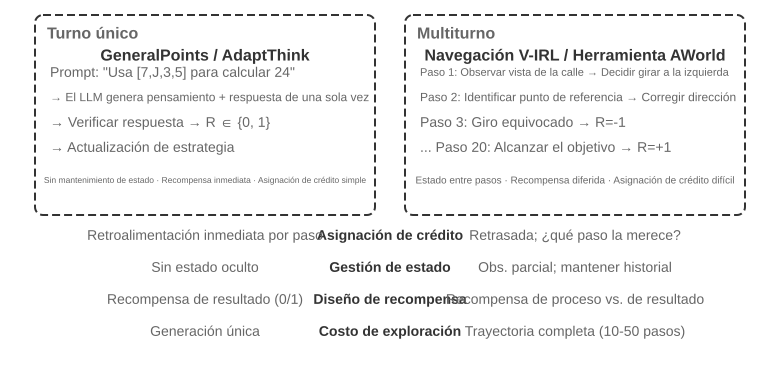
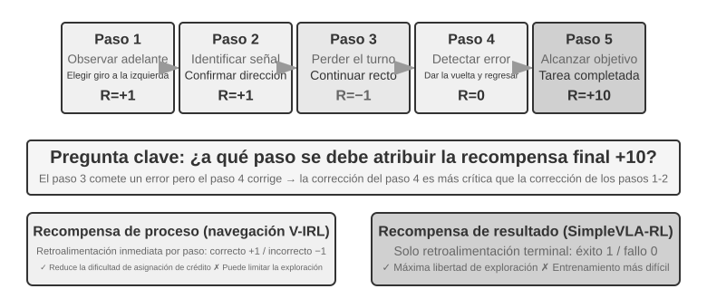
El paso de un solo turno a multiturno representa un salto cualitativo en complejidad. La política debe seleccionar la acción óptima actual considerando al mismo tiempo el valor de los estados futuros; no solo debe procesar retroalimentaciones inmediatas, sino realizar la asignación de crédito (Credit Assignment) bajo recompensas diferidas: determinar cuál paso de una secuencia de múltiples etapas contribuyó en mayor medida al resultado final. Por ejemplo, si un Agente de atención al cliente resuelve el problema de un usuario tras 10 turnos de diálogo y obtiene una calificación positiva, ¿esta calificación se debe a la pregunta precisa del turno 2 o a la explicación paciente del turno 7? El escenario multiturno introduce además la observabilidad parcial (el Agente no puede acceder al estado completo y debe construir una representación implícita del estado a partir del historial de observaciones).
La interacción multiturno abordada aquí toma la forma física del bucle ReAct descrito en los Capítulos 1 y 4: cada turno es una iteración de pensamiento → acción → observación, derivando la recompensa diferida de la restricción estructural de que "la calidad del resultado final solo se puede evaluar tras múltiples turnos".
Densidad y paradigmas de las señales de recompensa¶
Esta subsección aborda el diseño de recompensas aplicable también a tareas de un solo turno; se ubica en la sección multiturno debido a que la dificultad de asignación de crédito en escenarios multiturno convierte la densidad y forma de la retroalimentación de una opción secundaria en un factor determinante. Las señales de recompensa presentan dos dimensiones de diseño: densidad (con qué frecuencia se da retroalimentación: binaria, esporádica o de proceso) y forma de representación (qué aspecto tiene la retroalimentación: escalar, vectorial o generativa).
Antes de discutir el diseño de recompensas multiturno, sistematicemos el espacio de diseño de las señales de recompensa. Esto constituye tanto un tema central del entrenamiento de RL como un aspecto estrechamente vinculado a la evaluación automatizada abordada en el Capítulo 6: un entorno de evaluación cuidadosamente diseñado suele poder transformarse en un entorno de entrenamiento de alta calidad. Sin embargo, conviene distinguir dos conceptos: "un entorno de evaluación se puede reutilizar" no equivale a "un conjunto de datos de evaluación se puede usar directamente para entrenar".
Examinemos tres ejemplos. SWE-bench ofrece un caso típico de esta transformación: SWE-Gym se construye sobre él para crear un conjunto de tareas entrenables (la descripción del problema como entrada, el patch como supervisión y los casos de prueba ofreciendo la señal de recompensa); no obstante, lo que se utiliza para entrenar es el conjunto de tareas recién construido, mientras que el conjunto de evaluación de 500 problemas SWE-Bench Verified filtrado manualmente por OpenAI debe mantenerse estrictamente aislado de los datos de entrenamiento, ya que su inclusión anularía la validez de la evaluación (la tensión abordada en la Pregunta 10 de este capítulo). El registro de trayectorias completas de \(\tau²\)-bench (historial de diálogo, llamadas a herramientas, cambios de estado) aporta datos valiosos para el aprendizaje por imitación: las trayectorias exitosas actúan como muestras positivas y las fallidas como muestras negativas tras ser anotadas. Las plantillas parametrizadas de AndroidWorld pueden generar infinitas variantes de forma masiva, respaldando de forma natural el aprendizaje en currículo: desde operaciones simples de un paso hasta flujos complejos entre múltiples aplicaciones.
Estos ejemplos conducen a una misma conclusión: la calidad de la señal de recompensa provista por el entorno de evaluación determina directamente la eficiencia del entrenamiento de RL, siempre que se mantengan separados los datos usados para entrenar de los usados para evaluar.
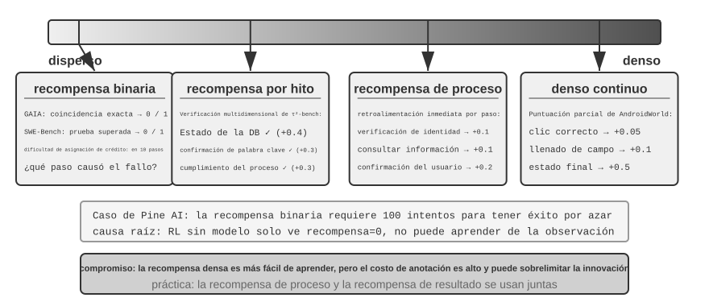
Escenarios aplicables a la recompensa binaria.
Para muchas tareas, la recompensa binaria más simple (éxito=1, fracaso=0) resulta suficiente. Por ejemplo, "responder un problema matemático": la respuesta es correcta o incorrecta, sin matices intermedios; o "ejecutar una consulta SQL": el resultado coincide o no con lo esperado. En estas tareas con respuestas correctas precisas, la recompensa binaria es simple y confiable, sin requerir diseños complejos.
El problema surge en tareas abiertas que carecen de una respuesta correcta única y precisa.
El dilema de la recompensa esporádica (sparse reward).
Consideremos el escenario de Pine AI realizando llamadas telefónicas para trámites. Al entrenar un Agente para contactar a Xfinity y cambiar un paquete de servicios usando recompensa binaria (éxito = 1, fracaso = 0): en el primer intento olvida recopilar el número de cuenta, obteniendo recompensa 0; en el segundo olvida los últimos cuatro dígitos de la tarjeta de crédito, obteniendo recompensa 0; en el tercero olvida la dirección de facturación, obteniendo recompensa 0... Tras 100 intentos logra el éxito por casualidad.
La raíz del problema, como señalaron Silver y Sutton en Welcome to the Era of Experience 6, es que los métodos de RL actuales solo aprenden del resultado final de éxito o fracaso, siendo incapaces de aprender de la rica retroalimentación provista por el entorno. Si la atención al cliente indica claramente "se requieren los últimos cuatro dígitos de la tarjeta", un humano lo memoriza tras escucharlo una sola vez, pero el RL solo ve el resultado final de "fracaso", sin entender por qué falló. Peor aún: en un proceso de 10 pasos, aunque los primeros 9 hayan sido perfectos y solo el paso 10 contenga un error, la señal recibida es únicamente "toda la tarea falló", impidiendo saber en cuál paso específico se erró. Técnicas de vanguardia como la Destilación en la Política (On-Policy Distillation) y la Penalización de Ruta Verificada (RLVP) abordadas más adelante buscan precisamente resolver este problema.
La Recompensa de Proceso (Process Reward) ofrece retroalimentación inmediata sobre cada paso crítico durante la ejecución, transformando la evaluación de una caja negra a una caja blanca. Por ejemplo, en la generación de código se puede evaluar de forma independiente la comprensión de requisitos, la búsqueda de código, el diseño de la solución, la escritura de código y la ejecución de pruebas; en atención al cliente se puede verificar la autenticación de identidad, la consulta de información, la confirmación y el pago. No obstante, las recompensas de proceso afrontan altos costos de anotación y el riesgo de restringir la innovación, requiriendo en la práctica trabajar en sinergia con las recompensas de resultado.
Evolución de los paradigmas de recompensa.
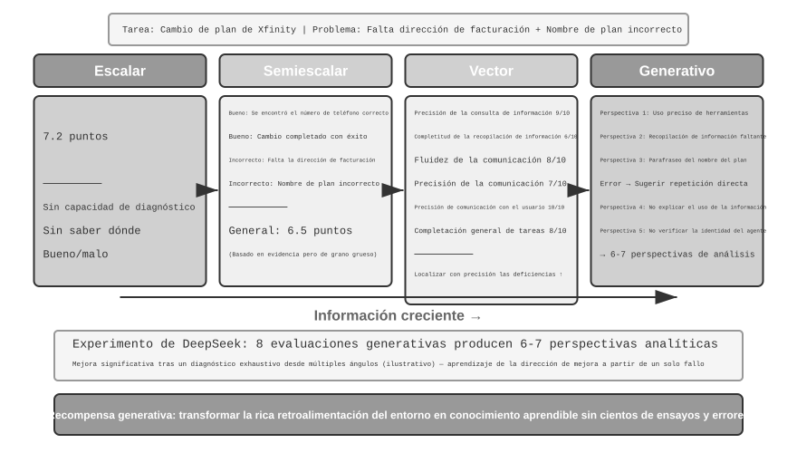
Investigaciones de DeepSeek (Liu et al., 2025) analizaron sistemáticamente las diferencias de las señales de aprendizaje en el espectro escalar: semi-escalar: generativo; a este espectro, este libro añade la dimensión de evaluación vectorial (multidimensional). Para comprender de forma intuitiva las diferencias entre paradigmas, retomemos el ejemplo de Pine AI realizando el trámite telefónico con Xfinity: esta vez el Agente completó la tarea pero con imperfecciones (omitió la dirección de facturación requiriendo un complemento y mencionó incorrectamente el nombre del paquete como Performance Plus en lugar de Performance Pro; las siguientes puntuaciones son ilustrativas):
Paradigma escalar: Otorga 7,2 puntos, sin capacidad de diagnóstico, omitiendo qué se hizo bien o mal. Paradigma semi-escalar: Analiza pros y contras antes de otorgar 6,5 puntos, ofreciendo justificación pero con información aún limitada. Paradigma vectorial (dimensión añadida en este libro): Evalúa dimensiones independientes: precisión en la consulta de información 9/10, integridad en la recolección de información 6/10, fluidez en la comunicación 8/10, precisión en la comunicación 7/10, precisión hacia el usuario 10/10, cumplimiento general 8/10. Esto actúa como un informe médico que permite identificar problemas con precisión (la "recolección de información" obtiene solo 6 puntos, indicando que se debe optimizar el prompt de esa fase).
Paradigma generativo: Describe diagnósticos detallados en lenguaje natural y permite múltiples muestreos para analizar desde distintas perspectivas: muestrear múltiples evaluaciones sobre una misma ejecución permite obtener perspectivas complementarias; consolidar estos diagnósticos ofrece ganancias muy superiores a recibir una única puntuación. La conclusión del estudio de DeepSeek es que los modelos de recompensa generativos mejoran continuamente la calidad del juicio mediante la expansión del cálculo durante la inferencia (muestreando múltiples evaluaciones y consolidándolas), superando en varios benchmarks de modelos de recompensa a esquemas escalares basados únicamente en aumentar la escala del modelo. El valor central de la recompensa generativa radica en transformar la rica retroalimentación del entorno en conocimiento aprendible, permitiendo al Agente extraer lecciones de un solo fallo en lugar de requerir cientos de intentos a ciegas.
Desde la perspectiva de RLHF, el modelo de recompensa generativo se puede considerar una evolución del modelo de recompensa discriminativo de Bradley-Terry: mientras que el RM discriminativo solo emite una puntuación escalar (cuál es mejor), el RM generativo produce una evaluación razonada en lenguaje natural explícito ("por qué es mejor o peor"). Esto lo vuelve intrínsecamente más transparente y aplicable a tareas abiertas difíciles de evaluar con reglas o escalas puramente numéricas.
La elección del tipo de función de recompensa depende del método de verificación de la tarea. Si la respuesta se puede verificar automáticamente con código (problemas matemáticos, pruebas unitarias), la recompensa binaria resulta más directa; si la tarea abarca múltiples dimensiones de calidad independientes (precisión de información, cortesía, resolución en atención al cliente), conviene usar recompensas vectoriales; si la tarea es abierta y difícil de desglosar (escritura creativa, diálogos complejos), se aconseja usar recompensas generativas para obtener análisis cualitativos.
Entrenamiento de modelos de recompensa generativos.
¿Cómo se entrena un modelo de recompensa generativo? El método tradicional requiere que expertos humanos evalúen numerosos casos para que el modelo los imite, proceso costoso donde además a los humanos les cuesta explicar formalmente por qué A es mejor que B. El método de DeepSeek permite que el modelo aprenda a evaluar de forma autónoma en tres pasos:
Primer paso: El modelo genera automáticamente criterios de evaluación para la tarea específica. Por ejemplo, al evaluar "realizar la llamada telefónica para modificar el paquete de Xfinity", el modelo establece: "Un Agente excelente debe: 1) encontrar el canal de atención oficial correcto; 2) recopilar la información de verificación de identidad completa; 3) transmitir con precisión las necesidades del usuario durante la llamada; 4) evitar fabricar o distorsionar información; 5) responder oportunamente a los requerimientos del operador".
Segundo paso: Evaluar el proceso de ejecución punto por punto según los criterios. Siguiendo el ejemplo: ¿Se encontró el número correcto? Sí, 1-800-XFINITY es la línea oficial. ¿Se recopiló la información completa? No, se omitió la dirección de facturación. ¿Fue precisa la transmisión? Hubo un error al nombrar incorrectamente el paquete.
Tercer paso: El sistema verifica automáticamente la precisión de la evaluación. Si el modelo afirma "se transmitió con precisión el nombre del paquete" cuando el registro muestra un error, el sistema le asigna una retroalimentación negativa; si identifica correctamente la omisión de la dirección de facturación, le asigna una retroalimentación positiva. Tras practicar con miles de casos, el modelo aprende a fijar criterios adecuados y emitir diagnósticos precisos para diversas tareas.
Este método aporta varias ventajas clave: fuerte generalización (aprende la meta-capacidad de "establecer criterios y evaluar" en lugar de memorizar una tabla de puntuaciones fija); proceso de evaluación transparente que facilita auditar sesgos (si se detecta que el modelo favorece las respuestas extensas, se puede corregir esa asociación errónea entre longitud y calidad); y soporte para la evolución conjunta del modelo de recompensa y el modelo de política, a diferencia de los métodos tradicionales donde el modelo de recompensa permanece estático.
Recompensa de proceso vs Recompensa de resultado: Elección clave en multiturno¶
Además de la asignación de crédito y la observabilidad parcial, las tareas multiturno afrontan dependencias de larga distancia: el impacto de decisiones iniciales (como la fijación de subobjetivos o la selección de herramientas) puede manifestarse decenas de pasos después. Esto plantea una elección crucial en el diseño de recompensas: la recompensa de proceso ofrece retroalimentación en cada paso, reduciendo la dificultad de asignación de crédito pero introduciendo sesgos de diseño humano que pueden restringir el espacio de exploración; la recompensa de resultado ofrece retroalimentación únicamente en la meta final, otorgando máxima libertad de exploración pero elevando la dificultad de entrenamiento y la demanda de muestras. Análogamente, la recompensa de proceso equivale a un profesor que corrige cada ejercicio de la tarea, permitiendo al estudiante saber rápido dónde erró; la recompensa de resultado equivale a calificar solo el examen final, dando libertad para explorar métodos de estudio pero con retroalimentación diferida. El diseño de la función de recompensa guarda relación estrecha con la construcción de entornos de evaluación del Capítulo 6: un entorno de evaluación automatizado de alta calidad es prerrequisito para el entrenamiento de RL.
En cuanto a terminología, estas dos modalidades corresponden a dos clases de modelos de recompensa: el Modelo de Recompensa de Proceso (Process Reward Model, PRM) evalúa cada paso intermedio del razonamiento o ejecución, siendo el trabajo representativo Let's Verify Step by Step de OpenAI 5 (demostrando en razonamiento matemático que un PRM entrenado con anotaciones paso a paso supera significativamente a la supervisión basada únicamente en la respuesta final); y el Modelo de Recompensa de Resultado (Outcome Reward Model, ORM) evalúa únicamente el resultado final. El verificador basado en reglas de RLVR se puede considerar un caso especial de ORM, reemplazando el modelo de puntuación aprendido por una regla determinista.
La asignación de crédito en la práctica. En ingeniería, la asignación de crédito se gestiona mediante varios mecanismos. El factor de descuento \(\gamma\) en RL para LLM multiturno suele fijarse directamente en 1: las tareas abarcan desde unas pocas hasta decenas de rondas, siendo el objetivo la consecución final sin necesidad de aplicar descuentos por lograrlo antes. PPO depende de GAE (Generalized Advantage Estimation), estimando mediante la red de valor "cuánto mejor es este paso respecto a lo esperado", equilibrando sesgo y varianza. GRPO adopta el extremo opuesto: trata toda la respuesta como una única acción, distribuyendo la ventaja a nivel de trayectoria por igual entre todos los tokens (la pregunta precisa del turno 2 y el saludo ineficiente del turno 7 reciben exactamente la misma asignación de crédito). Esta asignación gruesa funciona en tareas cortas de un solo turno, pero en tareas multiturno extensas diluye la señal de aprendizaje, motivo por el cual PPO con red de valor conserva su utilidad en escenarios multiturno. Una opción intermedia es la asignación a nivel de turno (turn-level): calcular ventajas por turno (aprovechando la retroalimentación del entorno o recompensas de proceso al final de cada turno), resultando más económica que la asignación por token y más fina que la asignación por trayectoria, siendo un compromiso habitual en frameworks multiturno de Agentes.
Experimento 7-12 ★★★: V-IRL-VL Razonamiento Espacial: Recompensa de Proceso
V-IRL (Yang et al., 2024; utilizado en el estudio de Chu et al. 2025 mencionado previamente, empleando PPO con red de valor) es un entorno de navegación visual en mundo abierto sobre imágenes de calles reales. V-IRL-L emplea descripciones de texto y V-IRL-VL proporciona cuadrículas de imágenes de 2×2 (frente, atrás, izquierda, derecha). El entrenamiento utiliza 1.000 rutas de Nueva York y la evaluación 18 rutas en nueve ciudades (Milán, Nueva Delhi, Londres, Hong Kong, entre otras) del benchmark oficial de V-IRL, con marcadas diferencias en arquitectura, diseño urbano e iluminación.
Variante de reglas: El entrenamiento utiliza direcciones absolutas (norte/este) y la evaluación direcciones relativas (izquierda/derecha). Variante visual: Evaluación entre distintas ciudades.
Los resultados confirman nuevamente que "SFT memoriza, RL generaliza". OOD de reglas: El RL en V-IRL-L sube un +11,0%, mientras que el SFT cae un 79,5%; en V-IRL-VL, el RL sube un +9,3% y el SFT cae un 33,2%. OOD visual: El RL en V-IRL-VL pasa del 16,7% al 77,8% (+61,1%), superando con un modelo de código abierto a líneas base potentes basadas en modelos cerrados con ingeniería de prompts; el SFT cae al 11,1% (-5,6%).
La recompensa de proceso desempeñó un rol decisivo en este experimento. A diferencia de la tarea de un solo turno de GeneralPoints, la navegación requiere retroalimentación en cada paso: acción correcta +1, acción incorrecta -1, error de identificación de referencia -1,5. Esta retroalimentación densa redujo la dificultad de asignación de crédito en secuencias largas: cuando el Agente se desvía en el paso 5, recibe retroalimentación negativa de inmediato, sin esperar al paso 20 para enterarse. Combinado con un mecanismo de reintento verificado (verify_iter=2, permitiendo dos intentos por punto de decisión), se mejoró la eficiencia de muestra y la estabilidad del entrenamiento.
Al rastrear la relación entre precisión visual y rendimiento general, se observó que el RL no solo optimizó la decisión dada la percepción, sino que mejoró la propia percepción visual: las señales orientadas a resultados retropropagaron hacia la capa de percepción, impulsando al codificador visual a aprender representaciones relevantes para la tarea. En contraste, el SFT sufrió sobreajuste en la capa de pensamiento descuidando la percepción, colapsando ante cambios de apariencia visual.
La sinergia entre SFT y RL es aún más evidente en tareas multiturno. Sin inicialización por SFT, el RL no logra entrenarse (el modelo base no genera JSON estructurado). Sin embargo, si el SFT sobreajusta en exceso, el RL tampoco logra recuperar el rendimiento fuera de la distribución (OOD). Se requiere un equilibrio delicado: el SFT debe aplicarse hasta lograr "estabilidad de formato y capacidad inicial", sin prolongarlo en exceso.
Experimento 7-13 ★★★: SimpleVLA-RL: Recompensa de Resultado
[Experimento Extendido]Los modelos VLA (Visión-Lenguaje-Acción) unifican la percepción visual, la comprensión del lenguaje y la generación de acciones, siendo el nuevo paradigma en manipulación robótica. Afrontan dos grandes desafíos: escalar SFT requiere recopilar trayectorias humanas masivas (costoso y limitado en diversidad), y los modelos entrenados en escenarios limitados degradan notablemente ante tareas, entornos u objetos no vistos. Inspirándose en los avances de DeepSeek-R1 mediante RL en razonamiento, este experimento explora si el RL puede potenciar la generación progresiva de acciones en VLA. SimpleVLA-RL se construye sobre veRL utilizando únicamente recompensa binaria de resultado (éxito/fracaso), e introduce tres medidas de exploración: muestreo dinámico para filtrar grupos con éxito/fracaso total; límite superior de recorte elevado [0,8, 1,28] para incentivar la exploración; y temperatura elevada a 1,6 para generar trayectorias diversas. La combinación de las tres medidas logró una mejora de aproximadamente el 30% en 300 pasos.
En LIBERO (benchmark de manipulación robótica), se reportó un nivel sobresaliente del 97,6%. Experimento de arranque en frío: Con solo 1 trayectoria por tarea en SFT (17,3%), añadir RL elevó el rendimiento al 91,7% (+74,4 puntos porcentuales, un incremento relativo de aproximadamente 430%), demostrando la potencia del RL ante la escasez de datos.
Durante el entrenamiento emergió el movimiento de "empujar y cortar" (pushcut): un nuevo patrón de acción descubierto autónomamente por el RL que jamás apareció en las demostraciones humanas. La ruta estándar demostrada era "aproximarse → agarrar → elevar verticalmente → desplazar horizontalmente → soltar", mientras que el RL descubrió una ruta superior: "aproximarse → agarrar → mantener posición baja → empujar horizontalmente → completar", omitiendo la elevación, ganando velocidad y reduciendo la exigencia de precisión de posicionamiento. Esto prueba que el RL puede superar el aprendizaje por imitación y descubrir estrategias más eficientes no concebidas por humanos.
El framework adopta GRPO combinado con muestreo dinámico (retener solo tareas con tasas de éxito intermedias), formando de manera natural un aprendizaje en currículo (de lo fácil a lo difícil). El tiempo real se gestiona mediante fragmentación de acciones (action chunking): el modelo genera múltiples acciones futuras en una sola inferencia, ejecutadas de forma secuencial por el hilo de control mientras la GPU genera el siguiente lote en segundo plano; mientras el tiempo de inferencia sea menor al de ejecución, el robot mantiene un movimiento continuo y fluido (el análisis completo sobre fragmentación de acciones se aborda en el Capítulo 9).
La mejora en generalización se manifiesta en múltiples dimensiones: espacial (políticas entrenadas en distribuciones específicas se transfieren a configuraciones distintas), de objetos (manejo de formas y texturas no vistas) y de metas (adaptación a nuevas descripciones de tareas).
Al comparar con V-IRL-VL se observan los compromisos entre ambos diseños de recompensa: la recompensa de resultado ofrece señales más esporádicas pero otorga mayor libertad de exploración (permitiendo descubrir "pushcut"); la recompensa de proceso acelera la convergencia mediante retroalimentación densa, pero puede restringir la estrategia al espacio demostrado. En resumen, cuando la corrección intermedia es fácil de definir, la recompensa de proceso es más eficiente; cuando la ruta óptima es desconocida, la recompensa de resultado ofrece mayor potencial.
Recompensar el resultado, restringir el proceso: Penalización de ruta verificada (RLVP) y recompensas parciales¶
La recompensa de proceso y de resultado resuelven "con qué densidad dar retroalimentación". Sin embargo, existe un problema no abordado por los enfoques anteriores: la recompensa de resultado no puede expresar la exigencia de que "el proceso debe respetar las reglas", aspecto que determina si un Agente real puede desplegarse en producción. Esta subsección analiza este punto basándose en el trabajo de RLVP 7 (Reinforcement Learning with Verified Penalty), cuya fórmula se resume en: recompensar el resultado, penalizar la ruta (reward the outcome, penalize the path).
El problema: Restricciones independientes del resultado que la recompensa de resultado no logra enseñar e incentiva a violar. Los Agentes en el mundo real, además de "completar la tarea", deben cumplir restricciones independientes del resultado (outcome-neutral constraints), cuyo cumplimiento no guarda relación directa con el éxito final: no llamar repetidamente a usuarios que rechazaron la atención, no actuar fuera del horario laboral sin autorización, no saltarse la verificación de identidad, no ejecutar comandos destructivos como rm -rf, no modificar archivos de prueba para hacer pasar las evaluaciones y no sobrescribir archivos sin haberlos leído previa e íntegramente. El dilema reside en que violar estas restricciones suele incrementar la "tasa de éxito superficial": tomar atajos es más rápido (modificar el archivo de prueba permite pasar la evaluación más rápido que corregir el bug real, y saltarse la verificación permite obtener el resultado antes). Por ello, la recompensa de resultado pura no solo no enseña estas restricciones, sino que incentiva activamente al Agente a violarlas. En los estudios de la investigación, los Agentes entrenados únicamente con recompensa de resultado violaron las reglas en casi todas las partidas.
Noción central: El entorno real es un "verificador asimétrico". Esta es la clave para comprender el método. En un entorno verificable por máquina (terminales, repositorios de código, comprobadores de teoremas), hay algo fácil de verificar: determinar si una acción es inadecuada (ejecutar comandos destructivos o llamar sin cumplir condiciones previas), debido a que las acciones inadecuadas poseen características deterministas claras. Por el contrario, hay algo difícil de verificar: determinar si el Agente está logrando un avance significativo hacia la meta (tan complejo como resolver la tarea misma). Dado que "detectar acciones inadecuadas" es económico y confiable, mientras que "juzgar el avance" es costoso y propenso a errores, la señal densa que el entorno puede ofrecer con confiabilidad es esencialmente la "penalización sobre la ruta", no la "recompensa sobre el avance". Esta asimetría define la estructura del método.
Procedimiento: Añadir una señal de ruta verificable junto a la recompensa de resultado. La recompensa total se formula en dos componentes:
Donde \(O\) es la recompensa de resultado original (esporádica, representando el objetivo real) y \(\Phi\) es la señal de ruta, generada paso a paso por un motor de reglas determinista (una función pura sobre la acción y el estado previo, no un modelo evaluador aprendido). La señal \(\Phi\) presenta dos aplicaciones, correspondientes a un signo menos y un signo más:
- Penalización (−λ): Cada vez que la trayectoria registra una acción violatoria verificable por máquina (comandos destructivos, modificación de pruebas), se deducen \(\lambda\) puntos sobre los tokens de esa acción.
- Recompensa de cumplimiento / Recompensa parcial (+μ, Partial Credit): Cada vez que se registra una acción adecuada verificable (cumplir una condición previa, alcanzar un subobjetivo, aumentar las pruebas aprobadas, reducir metas pendientes), se añaden \(\mu\) puntos.
Ambas señales se normalizan de forma independiente antes de combinarse, evitando que las señales densas de ruta diluyan la señal de resultado esporádica (o viceversa). Este esquema se integra directamente en el bucle de entrenamiento de PPO/GRPO: no modifica el algoritmo de optimización, sino que moldea la recompensa de cada paso para que el cálculo de ventaja contemple el cumplimiento de reglas durante el proceso.
¿Por qué es efectivo? Una explicación unificada: La varianza intra-grupo (within-group variance). Recordando la Sección 7.8: GRPO no entrena red de valor, sino que muestrea un grupo de \(G\) rollouts para un mismo prompt y utiliza el rendimiento relativo al promedio del grupo como ventaja. Existe un hecho matemático: la ventaja en GRPO es esencialmente la varianza intra-grupo. Si en un grupo todas las rollouts obtienen exactamente la misma recompensa, la varianza es cero y la ventaja de cada una es cero, impidiendo que ese grupo aporte gradiente alguno.
Al usar únicamente recompensa de resultado, este "bloqueo de varianza cero" ocurre inevitablemente en dos situaciones típicas del inicio y del final del entrenamiento:
- Grupo de fracaso total (fase inicial): La tarea es difícil, todas las rollouts del grupo fallan y \(O\) es 0 en todas → la varianza intra-grupo es cero → no hay gradiente. En las fases iniciales casi todos los grupos son de este tipo, perdiéndose muestreos costosos.
- Grupo de éxito total (fase avanzada): La tarea se ha aprendido, todas las rollouts tienen éxito y \(O\) es 1 en todas → la varianza es cero → no hay gradiente.
En consecuencia, la recompensa de resultado pura es "ciega" en ambos extremos de la tasa de éxito. La práctica habitual en la comunidad era descartar estos grupos de varianza cero (el muestreo dinámico de DAPO descarta prompts con éxito o fracaso total). RLVP plantea lo siguiente: en lugar de descartarlos, qué señal densa puede aportar la varianza faltante aquí. La respuesta queda clara:
- Una penalización verificable siempre aporta varianza. Aunque todas las rollouts del grupo hayan fallado, la forma en que "fallaron respecto a las reglas" suele diferir (algunas ejecutaron comandos destructivos y otras no). Al aplicar la penalización, surge inmediatamente varianza dentro del grupo de fracaso total, activando el gradiente. Dado que las acciones inadecuadas son fáciles de verificar, la penalización constituye la mitad de la solución siempre alcanzable.
- Una recompensa de avance verificable (Partial Credit) solo aporta varianza si el avance es alcanzable. Si en un grupo algunas rollouts aprueban más pruebas o reducen más metas pendientes, surge diferencia de avance y \(+\mu\) genera varianza; pero si la tarea es excesivamente difícil y el avance de cada rollout se estanca en cero (en reparación de software donde ninguna rollout pasa prueba alguna), la señal de avance es cero en todas partes y persiste la varianza cero. Por ello, la recompensa de avance constituye la mitad de la solución sujeta a alcanzabilidad (reachability-gated): en demostración de teoremas donde "reducir las metas pendientes" es alcanzable paso a paso, resulta altamente efectiva; en reparación de software donde la "proporción de pruebas aprobadas" suele ser inalcanzable de inicio, no aporta beneficio.
En resumen: Las señales densas solo son efectivas cuando aportan la varianza intra-grupo faltante a la recompensa de resultado; la penalización lo cumple siempre (las acciones inadecuadas son verificables), mientras que la recompensa de avance lo cumple solo si el avance parcial es alcanzable. Por ello, la investigación denomina a la penalización "la mitad universalmente aplicable" y a la recompensa de avance "la mitad condicionada".
Uso uno: Penalizar la ruta para lograr capacidad de despliegue: Cuatro principios de diseño. Aplicar \(\Phi\) como penalización para enseñar al Agente a respetar las restricciones exige cuatro principios verificados para evitar errores de diseño:
- Penalizar únicamente "acciones" verificables, nunca la "falta de avance". La penalización debe dirigirse a una acción concreta y verificable por máquina (ejecutar
rm -rfo llamar sin cumplir condiciones), y nunca a "no haber avanzado en este paso". De lo contrario, "no ejecutar acción alguna" se convierte en la forma más simple de evitar penalizaciones por falta de avance, enseñando al Agente a no hacer nada. - La recompensa de resultado es el motor principal; la penalización no se puede optimizar aisladamente. Existe la trampa de la inacción (inaction trap): si solo hay penalización sin recompensa de resultado, la política óptima pasa a ser "no hacer nada" (cero violaciones, pero cero éxito). Los experimentos mostraron que la pura penalización colapsa la tasa de éxito a cero en todos los casos. La recompensa de resultado debe proveer la fuerza para completar la tarea, mientras la penalización guía el "cómo".
- Acompañar cada penalización (−λ) de una recompensa de cumplimiento (+μ). Además de deducir puntos por "modificar archivos de prueba", se debe premiar la acción correcta de "corregir el bug real para hacer pasar las pruebas de forma natural", ofreciendo una ruta válida al Agente. Omitir esta recompensa de cumplimiento frena la adopción de comportamientos correctos.
- La ruta de cumplimiento debe ser alcanzable y la penalización no debe ser manipulable. Se deben usar demostraciones iniciales para que el Agente conozca la ruta correcta (de lo contrario podría no descubrir jamás la acción correcta); asimismo, la verificación de violaciones debe emplear comprobaciones deterministas precisas y no evaluadores aprendidos, evitando transferir la manipulación desde la política hacia el evaluador.
Uso dos: Recompensar el avance alcanzable para ganar eficiencia de muestra (Partial Credit). Aplicar el mismo \(+\mu\) como "recompensa de avance" en lugar de "recompensa de cumplimiento" transforma su función de "restringir el proceso" a "acelerar el aprendizaje": en grupos de fracaso total donde el avance es alcanzable, \(+\mu\) convierte un estado de gradiente cero en un gradiente efectivo, permitiendo lograr la misma capacidad con menos interacciones. En comprobación de teoremas (miniF2F) y reparación de software, se demostró que la variable clave es la alcanzabilidad y no la densidad de la señal por sí misma: en teoremas, donde cada paso reduce las metas pendientes, la recompensa densa de avance acelera notablemente la convergencia; en reparación de software, donde batches enteros no logran pasar prueba alguna, el avance es inalcanzable y la recompensa de resultado pura resulta superior. La alcanzabilidad se puede diagnosticar antes del entrenamiento midiendo la varianza intra-grupo con rollouts del modelo base.
Relación con RLVR. RLVP y RLVR (Aprendizaje por Refuerzo con Recompensas Verificables) se complementan: RLVR verifica el resultado y RLVP verifica además el proceso. Su superposición genera una señal de entrenamiento que atiende a "completar la tarea" y a "hacerlo respetando las reglas", necesario para desplegar Agentes en entornos reales.
Experimento 7-14 ★★★: RLVP: Recompensar el Resultado, Penalizar la Ruta
[Experimento Extendido]Objetivo del experimento: Verificar si la combinación de "recompensa de resultado + señal de ruta verificada" logra reducir las violaciones de restricciones (uso de penalización) y mejorar la eficiencia de muestra (uso de recompensa parcial) sin degradar la tasa de éxito en la tarea.
Esquema técnico: Sobre la base de GRPO, se incorporan la recompensa de resultado O (consecución de la tarea) y la señal de ruta \(\Phi\) (deduciendo puntos por violaciones verificables y sumando por acciones adecuadas), combinándolas tras normalización independiente según \(R = O + \beta\cdot\Phi\). Los entornos de prueba incluyen TerminalBench (operaciones en terminal, donde violaciones implican comandos destructivos) y miniF2F (demostración formal de teoremas, evaluando eficiencia de muestra).
Grupo de control: GRPO estándar basado únicamente en recompensa de resultado.
Observaciones esperadas: En TerminalBench (Qwen3-4B, 5 semillas aleatorias), el promedio de violaciones por partida descendió de 3,71 con recompensa pura de resultado a 0,66 (una reducción de aproximadamente 6 veces), mientras la tasa de éxito se mantuvo equivalente dentro del margen de ruido, demostrando que el cumplimiento de reglas se obtiene de forma casi gratuita y que el Agente ejecuta más acciones efectivas en lugar de abstenerse de actuar. En miniF2F (donde el avance es alcanzable), las iteraciones requeridas para alcanzar una tasa de éxito de 0,9 descendieron de 7,0 a 4,4 (modelo 4B), siendo la diferencia aún mayor en modelos grandes (30B: 8,5 → 5,4, donde la recompensa de resultado pura llegó a divergir en algunas semillas). En operaciones de archivos en cadena, la proporción de "grupos de fracaso total" (muestras desperdiciadas sin gradiente) descendió del 65% al 8%. Como contraejemplo, en la configuración de reparación de software "donde el avance era inalcanzable" (donde batches enteros no pasaban prueba alguna), la recompensa densa de avance permaneció en cero sin aportar beneficios, respaldando el principio de que la alcanzabilidad es el requisito indispensable.
RL para el Aprendizaje de Llamada a Herramientas¶
En los experimentos multiturno anteriores, el espacio de acciones del Agente se limitaba a operaciones internas como desplazarse u observar. Los Agentes reales deben invocar herramientas externas (motores de búsqueda, intérpretes de código, procesadores de documentos), lo que introduce nuevos desafíos en el entrenamiento de RL.
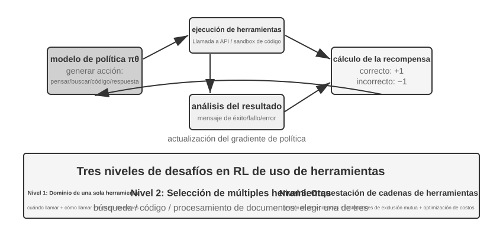
El uso de herramientas expande las capacidades del Agente desde el "razonamiento interno del modelo" hacia la "colaboración con sistemas externos", siendo crucial para su aplicación práctica. La dificultad en el entrenamiento con RL de llamadas a herramientas se estructura en tres niveles. El primer nivel es dominar el uso de herramientas individuales (comprender especificaciones de entrada/salida, manejar momentos de llamada y procesar errores). El segundo nivel es seleccionar entre múltiples herramientas (decidir cuándo buscar, cuándo ejecutar código o cuándo procesar documentos entre docenas de opciones). El tercer nivel es la orquestación de cadenas de herramientas (identificar dependencias, gestionar restricciones de exclusión mutua y optimizar la eficiencia de costos).
Actualmente existen dos rutas activas en RL para herramientas. Una es la búsqueda mejorada: representada por Search-R1 (Jin et al., 2025), entrena al modelo mediante RL para decidir autónomamente cuándo iniciar búsquedas durante el razonamiento y aprovechar los resultados devueltos, en lugar de aplicar flujos fijos de RAG. La otra es la ingeniería de software: representada por entornos de entrenamiento como SWE-Gym, aplica RL multiturno en repositorios de código reales para que el modelo edite, ejecute y corrija código iterativamente. Los desafíos compartidos por ambas rutas son la asignación de crédito en secuencias largas (atribuir el éxito final a decisiones adoptadas decenas de pasos atrás) y la ingeniería de entornos (construir entornos de entrenamiento estables, reproducibles y paralelizables a gran escala).
Existe un detalle de ingeniería indispensable en RL para herramientas: el enmascaramiento de pérdida (loss masking) sobre la retroalimentación del entorno. Una trayectoria de llamada a herramientas contiene tokens generados por el modelo (pensamiento, parámetros de herramientas) y tokens retornados por el entorno (salidas del intérprete de código, resultados de búsqueda, respuestas de atención al cliente). Estos últimos no son generados por la política sino dados por el entorno; si se incluyen en el gradiente de política, se entrenaría al modelo para "predecir la salida del sandbox", desviando el objetivo de optimización y desestabilizando el entrenamiento. La práctica estándar consiste en enmascarar los tokens de retroalimentación del entorno al calcular la pérdida, retropropagando gradientes únicamente sobre los tokens generados por el propio modelo. Este es un punto técnico central en ReTool (enmascarando gradientes en tokens dentro de la etiqueta <interpreter>) y en Search-R1 ("enmascarar tokens recuperados para estabilizar el entrenamiento"), estando integrado en frameworks de entrenamiento como veRL o AWorld.
Experimento 7-15 ★★★: ReTool: Intérprete de Código para Resolver Problemas Matemáticos
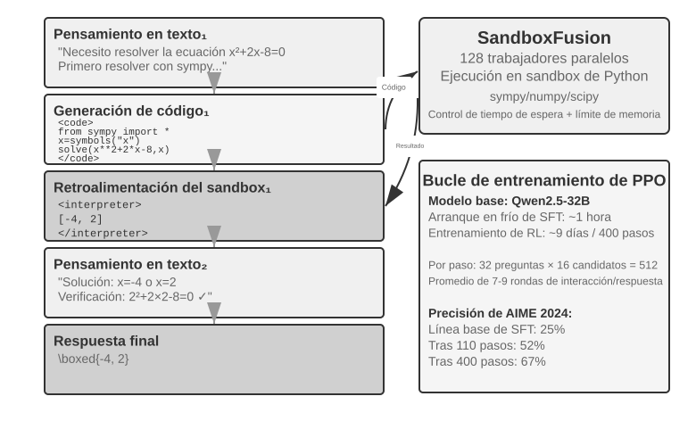
El pensamiento en texto puro tiende a acumular errores en cálculos numéricos precisos, operaciones simbólicas o ecuaciones complejas, mientras que un intérprete de código ofrece verificación precisa mediante ejecuciones. ReTool integra la ejecución en tiempo real de código en el bucle de pensamiento de RL, permitiendo que el modelo aprenda autónomamente cuándo y cómo usar herramientas guiado por la retroalimentación de resultados.
El entrenamiento consta de dos fases. Un precalentamiento con SFT (alrededor de 1 hora) transforma datos de razonamiento en texto puro a trayectorias mejoradas con código, estableciendo el patrón básico de llamada a herramientas. El entrenamiento con RL (PPO modificado sobre veRL, usando datos de DAPO-Math-17k, durante unos 9 días y 400 pasos) optimiza la política mediante rollouts que entrelazan la ejecución de código en tiempo real: el modelo genera código dentro de etiquetas
<code>, el sandbox lo ejecuta y devuelve el resultado envuelto en etiquetas<interpreter>, y el modelo continúa generando, formando secuencias de razonamiento híbridas de "Texto 1 + Código 1 + Retroalimentación 1 + ... + Respuesta". Cada paso de entrenamiento genera 512 respuestas (32 problemas × 16 candidatos), con un promedio de 7 a 9 turnos de interacción por respuesta, aumentando el procesamiento de tokens de 25M a 40M.ReTool utiliza PPO estándar sin modificar el algoritmo de optimización. No obstante, al emplear datos de DAPO-Math-17k del equipo de DAPO, presentamos las cuatro mejoras del algoritmo DAPO (Yu et al., 2025) orientadas a evitar que el modelo converja prematuramente a una sola estrategia:
- Clip-Higher (Ampliar el límite superior de exploración): El algoritmo PPO estándar limita la magnitud de cambio de la política por iteración para evitar inestabilidades; sin embargo, restricciones excesivas impiden probar nuevas rutas. Clip-Higher flexibiliza moderadamente este límite: cuando el modelo descubre una ruta significativamente mejor, se permite un ajuste más amplio hacia ella, incentivando la exploración.
- Pérdida de Gradiente de Política a Nivel de Token (Token-Level Policy Gradient Loss): El GRPO original realiza una normalización a nivel de muestra (promediando por tokens en cada respuesta y luego entre muestras), lo que diluye el peso de cada token en respuestas largas por
1/|o_i|. DAPO elimina el promediado por muestra y normaliza de forma unificada sobre todos los tokens del batch, otorgando a cada token un peso equivalente; como consecuencia, las respuestas largas aportan un gradiente proporcional a su longitud.- Muestreo Dinámico (Dynamic Sampling): Ajusta dinámicamente las iteraciones de muestreo por problema durante el entrenamiento: reduce el muestreo en problemas sencillos que el modelo resuelve con estabilidad y lo incrementa en problemas en el "rango de aprendizaje" (tasas de éxito entre el 20% y el 80%), concentrando el cómputo en datos con mayor valor de aprendizaje.
- Moldeo de Recompensa por Longitud Excesiva (Overlong Reward Shaping): Aplica una penalización suave a respuestas excesivamente largas sin mejora en la precisión, guiando al modelo hacia razonamientos más concisos y eficientes.
De vuelta a ReTool: En AIME 2024, el entrenamiento sobre Qwen2.5-32B-Instruct alcanzó en el paso 110 una precisión del 52% (frente al 25% inicial), logrando un 85% en Best-of-30; el resultado final de la investigación alcanzó el 67,0% tras 400 pasos, mientras que la línea base de RL en texto puro logró solo un 40,0% tras 1.080 pasos. Las cifras del cuadro corresponden a la configuración de este modelo 32B.
Capacidades emergentes: Autocorrección de código (identificar errores de ejecución y generar versiones corregidas), evolución del uso de herramientas desde la verificación tardía hacia la exploración temprana, y optimización de la eficiencia del pensamiento (reducción del 40% en longitud manteniendo la precisión).
La dinámica de entrenamiento en los primeros 110 pasos mostró un patrón en tres fases: inicial (pasos 0-20), aprendizaje rápido de herramientas con aumento del 0,5% de precisión por paso; intermedia (pasos 20-70), exploración fluctuante donde la longitud aumentó de 2.500 a 4.700 tokens con fuerte aumento de diversidad; y final (pasos 70-110), convergencia estable con la longitud estabilizándose en 4.400 tokens y rendimiento continuo ascendente.
La diferencia en tiempo entre SFT y RL proviene de la densidad de información: el SFT posee supervisión en cada token, mientras el RL recibe un único señal de éxito/fracaso por episodio. En el entrenamiento real, el tiempo por paso se incrementa con la longitud de la respuesta, y unas pocas respuestas excesivamente largas pueden prolongar sustancialmente el ciclo global.
Experimento 7-16 ★★★: AWorld-train: Aprender a Usar Herramientas en un Entorno de Pruebas
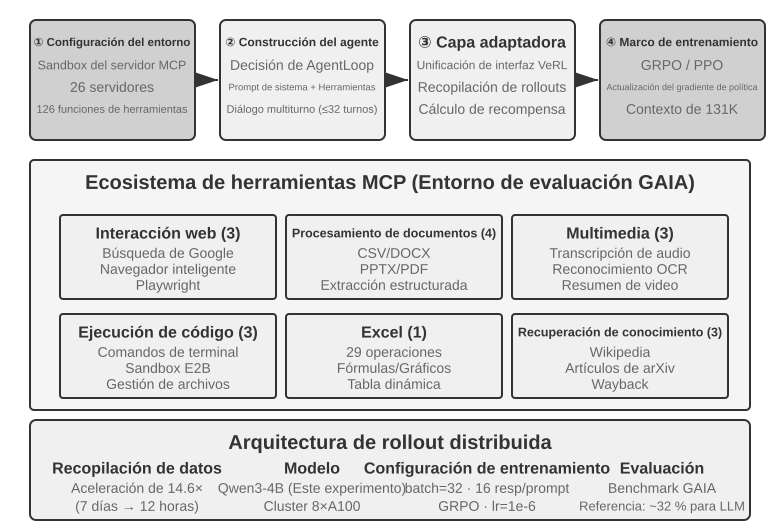
GAIA es uno de los benchmarks de evaluación de Agentes más exigentes. Incluso grandes modelos entrenados a gran escala suelen alcanzar alrededor del 32%, distantes de los sistemas avanzados. Este experimento utiliza un modelo pequeño (Qwen3-4B) con el objetivo principal de ilustrar el flujo completo de "aprender mediante la práctica".
El entorno de entrenamiento de AWorld es un sandbox de servidores MCP que ofrece 26 servidores y 126 funciones de herramientas, abarcando interacción web (búsqueda en Google, navegador inteligente, Playwright), procesamiento de documentos (CSV/DOCX/PPTX/PDF), procesamiento multimedia (transcripción de audio, OCR, resumen de video), ejecución de código (comandos de terminal, sandbox E2B), manejo de Excel (29 operaciones empresariales) y recuperación de conocimiento (Wikipedia, ArXiv, Wayback Machine). Los límites de tasa, fluctuaciones y cierres de cuenta de las API reales impiden entrenar directamente en producción: construir un entorno de simulación estable, controlable y reproducible es requisito previo para el entrenamiento de RL con múltiples herramientas.
El cambio cualitativo al pasar de una sola herramienta a múltiples herramientas radica en que con una sola herramienta se decide "cuándo" y "cómo" llamar, mientras que con múltiples herramientas se debe resolver además "cuál llamar" y "cómo combinarlas", introduciendo complejidad combinatoria y dependencias: existen dependencias previas (buscar antes de navegar páginas específicas), restricciones de exclusión mutua (herramientas no ejecutables simultáneamente) y diferencias de costo (cuotas y latencias distintas entre API). La política debe planificar bajo estas restricciones en lugar de elegir de forma ávida la mejor opción inmediata.
Conviene precisar que este es un experimento de entrenamiento abierto sin resultados de línea base presentados: un modelo 4B no alcanza puntuaciones destacadas en GAIA, residiendo el valor del experimento en ejecutar la cadena completa de "aprender mediante la práctica". Criterios de aceptación y observaciones esperadas: ejecutar con estabilidad el ciclo de reset y episodio en el entorno (sin fallos en llamadas a herramientas, retroalimentación o actualización de estado); curva de recompensa promedio con tendencia ascendente durante el entrenamiento; incremento en la tasa de éxito de llamada a herramientas y adopción progresiva de selecciones y combinaciones de herramientas más razonables por parte del modelo.
Exploraciones de Vanguardia para Mejorar la Eficiencia de Muestra¶
Los experimentos descritos ilustran el valor central del RL en el entrenamiento de Agentes, pero con altos costos de muestras. El entrenamiento con RL en ReTool requirió más de 200 veces el tiempo de SFT (9 días frente a 1 hora), lo que resulta difícil de asumir en escenarios con recursos limitados o iteraciones rápidas.
La baja eficiencia de muestra del RL obedece a diversas causas (alta varianza, recompensas esporádicas, dificultad para reutilizar datos en la política), teniendo su raíz en la naturaleza libre de modelo (model-free) de los métodos de gradiente de política dominantes: estos no construyen un modelo del entorno (world model, "cómo cambiará el mundo tras ejecutar una acción") ni aprovechan directamente la rica información de una sola retroalimentación (dos aspectos relacionados pero no equivalentes). La retroalimentación del entorno (causas de error, campos faltantes, sugerencias de flujo) se desperdicia en gran medida, como se analizó en "El dilema de la recompensa esporádica". Consideremos un trámite telefónico donde la atención al cliente indica "se requieren los últimos cuatro dígitos de la tarjeta para verificar la identidad": el RL libre de modelo solo aprende de la señal final de éxito o fracaso (recompensa 0 o 1), requiriendo cientos de exploraciones aleatorias para incluir esos dígitos por azar, mientras que un humano memoriza la instrucción de inmediato para la siguiente interacción.
Frente a este cuello de botella, este capítulo ofrece dos soluciones complementarias. Una es transformar la información desperdiciada del entorno en recompensas aprendibles: incluir de forma explícita en la función de recompensa señales deterministas y verificables por máquina ("el cliente exige verificación previa", "el comando es destructivo" o "se avanzó un paso"), que es la esencia de RLVP analizado en la Sección 7.10 (especialmente el uso de recompensas parciales para recuperar muestras en grupos de fracaso total). La otra solución, detallada a continuación, consiste en densificar la señal de entrenamiento en cada paso: en lugar de recibir un escalar al final de la tarea, ofrecer guía en cada posición de la trayectoria mediante la Destilación en la Política (On-Policy Distillation).
On-Policy Distillation: Combinando lo mejor de SFT y RL¶
La Destilación en la Política (On-Policy Distillation) fue formalizada y difundida por Thinking Machines Lab en 2025 8, siendo hoy un método dominante en post-entrenamiento. Para entender sus ventajas, examinemos primero las limitaciones centrales del SFT y del RL, ya que este método combina las fortalezas de ambos.
La limitación del SFT: Desajuste entre estudiante y muestreador (Learner-Sampler Mismatch). Los datos de entrenamiento del SFT provienen de un "muestreador" (un modelo profesor o un experto humano), y el "estudiante" (el modelo en entrenamiento) se limita a imitar de forma pasiva esas rutas correctas. El problema surge cuando el estudiante actúa de manera autónoma y comete un error, entrando en un estado desviado no presente en los datos de entrenamiento; al no haber aprendido cómo retornar a la ruta correcta, los pequeños errores se acumulan hasta provocar fallos graves, similar a un estudiante que memoriza respuestas estándar pero no sabe cómo corregir un cálculo intermedio erróneo. La causa raíz es que quien ejecuta la acción en el entrenamiento (el profesor) y quien la ejecuta en el despliegue (el estudiante) no comparten la misma distribución.
La limitación del RL: Señal excesivamente esporádica. El RL permite que el estudiante genere sus propias trayectorias (en la política / on-policy), resolviendo el desajuste de distribución; sin embargo, al recibir únicamente un escalar de éxito o fracaso al final de la trayectoria, requiere cientos de intentos de ensayo y error para deducir cómo corregir cada paso intermedio.
La Destilación en la Política combina las ventajas de ambos: permite que el estudiante genere sus propias trayectorias (en la política / On-Policy, resolviendo el desajuste de distribución), mientras un modelo profesor más fuerte otorga una puntuación token a token a cada paso del estudiante (señal densa / Dense Signal, resolviendo la escasez de señal). Comparando los tres métodos: SFT es "fuera de la política + señal densa" (con desajuste de distribución), RL es "en la política + señal esporádica" (con retroalimentación diferida), y la Destilación en la Política es "en la política + señal densa", superando ambas limitaciones.
¿Cómo se asigna la puntuación? El profesor no se limita a juzgar si el paso es correcto, sino que ofrece la distribución de probabilidad completa sobre las distintas opciones para el siguiente token en la posición actual. Por ejemplo, si el estudiante escribe "consultar primero la API y luego procesar el retorno...", el profesor indica que en esa posición "consultar" debe tener un 80% de probabilidad, "llamar" un 15% y otras opciones el 5%; el objetivo del estudiante es alinear su distribución predicha con la del profesor en cada posición. Técnicamente, esto se logra minimizando la divergencia KL entre ambas distribuciones (métrica explicada en la Sección 7.7). Frente al escalar binario final, esta alineación de distribución token a token densifica la señal en varios órdenes de magnitud.
Los resultados son destacables: en tareas matemáticas, el número de pasos de entrenamiento necesarios para alcanzar un rendimiento equivalente se reduce a aproximadamente 1/10 respecto a RL puro. En tareas de razonamiento en cadena larga la ventaja es aún mayor: al contar con la guía del profesor en cada paso, el estudiante aprende a corregir errores rápidamente sin profundizar en rutas erróneas. Además, mitiga el sobreajuste: mientras el RL estándar tiende a memorizar respuestas finales al repetir un mismo prompt, aquí cada trayectoria es distinta y el profesor ofrece retroalimentación específica para cada caso, aprendiendo estrategias generales y elevando la reutilización de los datos.
Este método aporta un valor excepcional en escenarios de Agentes multiturno: dado que las señales de éxito o fracaso en tareas multiturno se ubican al final y resultan esporádicas y diferidas, la distribución token a token del profesor aporta la guía intermedia faltante. No obstante, exige un requisito previo alineado con el hilo central de este capítulo: contar con un entorno de simulación realista donde el estudiante pueda explorar libremente; de lo contrario, si el estudiante entra en estados desviados no vistos tampoco por el profesor, las puntuaciones de este último dejarán de ser confiables. El valor del enfoque en la política descansa en que el estudiante explore efectivamente sobre la distribución de despliegue.
Esta superioridad de la señal densa sobre la esporádica se verificó en un experimento con Agentes. En el Capítulo 2 se abordó la "noción del tiempo" del Agente (urgencia, persistencia, vigilancia), administrable en la inferencia mediante manuales de operación; sin embargo, lograr que un modelo de escala 8B consolide ese sentido del ritmo directamente en los pesos sin prompts representa un desafío de post-entrenamiento. En dicha investigación se evaluaron DPO y cuatro formulaciones de RL, coincidiendo cada una con modos de falla analizados en este capítulo: la recompensa por umbral rígido resultó excesivamente esporádica, con la mayoría de las rollouts obteniendo puntuación cero y anulando la ventaja intra-grupo (escasez); al usar recompensas por niveles la señal se densificó, pero el indicador proxy no coincidía con la tasa de éxito real (desalineación de objetivos); evaluar únicamente la respuesta del primer turno incentivó respuestas cortas y evasivas que empeoraron la evaluación multiturno (desajuste de forma de rollout); y finalmente, al alinear la forma del rollout con la evaluación y observar un ascenso en la recompensa, la política colapsó en pocos pasos hacia un patrón único que ni una ancla KL 4 veces más fuerte logró contener (colapso de entrenamiento). Ninguna formulación superó el techo del SFT. Al cambiar a la Destilación en la Política (utilizando un modelo profesor Qwen3-32B congelado que ofrecía la distribución objetivo token a token sobre las trayectorias multiturno generadas por el estudiante), el entrenamiento convergió suavemente, superando la tasa de éxito en las cuatro condiciones a la línea base de SFT en un rango de 23 a 47 puntos porcentuales 9. El fallo de cuatro formulaciones de señales esporádicas frente al éxito de una señal densa ratifica la lección principal: el obstáculo en el post-entrenamiento raras veces radica en la sofisticación de la función de recompensa, sino en la densidad intrínseca de la señal.
¿Qué hacer si no hay un profesor más fuerte?: Auto-destilación en la política (OPSD)¶
La potencia de la Destilación en la Política proviene del profesor, pero esto impone un requisito estricto: disponer de un modelo profesor significativamente más fuerte que el estudiante. Esto no siempre se cumple en la práctica. Si entrenas un modelo de dominio especializado donde los modelos existentes presentan limitaciones, no dispondrás de un profesor más fuerte. ¿Significa esto renunciar a los beneficios de la señal densa?
Una solución ingeniosa es la Auto-destilación en la Política (On-Policy Self-Distillation, OPSD) 13: hacer que un mismo modelo interprete los roles de profesor y estudiante, diferenciándose únicamente por el contexto. La versión profesor accede a "información privilegiada" (privileged information), como la respuesta de referencia o una solución verificada; no requiere "saber resolver" la pregunta de antemano, sino justificar paso a paso la trayectoria generada por el estudiante teniendo la respuesta a la vista, emitiendo la distribución de probabilidad objetivo token a token; la versión estudiante ve únicamente la pregunta inicial y se alinea con la versión profesor sobre sus propias trayectorias muestreadas. La intuición de base es: "explicar un problema con la respuesta a la vista" es sustancialmente más sencillo que "resolver el problema de forma independiente", compartiendo la misma asimetría de "verificación vs generación" de RLVR, pero utilizando aquí dicha asimetría para generar señales de supervisión densas en lugar de un escalar esporádico.
Frente a RLVR, OPSD presenta dos ventajas centrales. En primer lugar, no depende de recompensas verificables. RLVR exige la existencia de un verificador automático, mientras que la información privilegiada en OPSD puede provenir de diversas fuentes: la respuesta estándar, prompts de sistema más ricos, demostraciones humanas o documentación de dominio, abarcando cualquier información que permita al modelo fundamentar a posteriori el comportamiento correcto. En segundo lugar, la señal de supervisión es considerablemente más densa que en RL. RL otorga un único escalar de recompensa por trayectoria, mientras que OPSD ofrece una distribución de probabilidad completa en cada posición de la trayectoria, con una eficiencia de tokens superior a los métodos de RL. Así, OPSD utiliza "información privilegiada" en sustitución de un "profesor más fuerte", emergiendo como una alternativa práctica para resolver la baja eficiencia de muestra.
Por supuesto, los límites de este paradigma son claros y derivan de que la capacidad máxima del profesor está acotada por el propio modelo: la ganancia depende de cuánta capacidad adicional aporta la información privilegiada. Si el modelo es incapaz de explicar el proceso aun teniendo la respuesta a la vista (por ejemplo, cuando la respuesta se obtuvo por búsqueda por fuerza bruta sin un razonamiento explicable en lenguaje natural), la auto-destilación carece de señal útil. Investigaciones previas han identificado modos de falla en la OPSD ingenua, como la pérdida progresiva del estilo de razonamiento original durante la auto-destilación, requiriendo regularizaciones adicionales para mantener la estabilidad 14. El concepto de "un mismo modelo actuando como profesor y estudiante mediante contextos distintos" continúa evolucionando rápidamente, ofreciendo una vía de solución ante la falta de profesores más fuertes.
Panorama Completo del Post-entrenamiento y Puntos Prácticos¶
Este capítulo ha recorrido un largo camino desde la "predicción del siguiente token" en el pre-entrenamiento: SFT para consolidar formatos, RL para romper barreras de generalización, tareas multiturno con desafíos de asignación de crédito, y el diseño de recompensas evolucionando desde resultados finales hasta señales de ruta que "recompensan el resultado y restringen el proceso", junto con la llamada a herramientas. Estos experimentos comparten un hilo común: lo que aprende el modelo depende de la señal de entrenamiento recibida, y la calidad de dicha señal está determinada principalmente por los datos y el entorno, no por el algoritmo.
Paradigma de colaboración: Resumido anteriormente mediante la metáfora de la pintura tradicional "primero la forma, luego el espíritu": el SFT se aplica hasta lograr "estabilidad de formato y capacidad inicial", y el RL construye la estrategia sobre esa base. Ambos actúan en niveles distintos: el SFT consolida protocolos y estructuras (formatos JSON, plantillas de diálogo, interfaces de herramientas), y el RL optimiza estrategias y generalización (reglas aritméticas, razonamiento espacial, secuencias de acciones). Equilibrio clave: un entrenamiento excesivo en SFT provocará el colapso del modelo en la distribución de entrenamiento, restringiendo el espacio de optimización del RL.
Prestar atención a los siguientes trampas comunes ayuda a evitar desperdiciar recursos:
- Depender en exceso del post-entrenamiento para memorizar hechos: Se debe emplear RAG para gestionar conocimientos fácticos (dinámicamente actualizables, con fuentes rastreables y sin riesgo de olvido por entrenamiento), reservando el post-entrenamiento para "cómo utilizar el conocimiento".
- Introducir RL antes de estabilizar el formato: Cuando el modelo no genera estructuras JSON de forma estable (tasa de error de parseo superior al 20%), el entrenamiento de RL fallará por completo. Se debe aplicar SFT previamente.
- Diseño inadecuado de funciones de recompensa que conduce a reward hacking: El modelo aprende a explotar brechas en la recompensa para obtener altas puntuaciones sin completar la tarea (como generar texto extenso y vacante cuando se premia la longitud). Se debe evaluar el objetivo final y no indicadores intermedios.
- Subestimar la fidelidad de la simulación: Si la simulación es simplificada (la atención al cliente responde siempre con patrones fijos) o las respuestas del entorno no son realistas (mensajes de error incoherentes con producción), la estrategia entrenada fallará en escenarios reales. El costo de construir un entorno de simulación de alta fidelidad puede superar al del entrenamiento.
- Sobre-entrenamiento que deteriora la generalización: Cuando la pérdida de entrenamiento desciende continuamente pero el rendimiento en validación empeora, el modelo está memorizando detalles. El SFT es propenso a este problema, siendo la detención temprana (early stopping) fundamental; la optimización excesiva en RL conduce igualmente al sobreajuste en la distribución de la tarea.
- Colapso de la función de valor y exploración insuficiente: Una estimación imprecisa de la función de valor en PPO genera sesgos en el cálculo de ventajas, manifestándose en oscilaciones drásticas en las curvas de entrenamiento. Temperaturas excesivamente bajas o aleatoriedad insuficiente hacen que el Agente caiga en óptimos locales.
- Subestimar el costo computacional del RL: Tareas con buen rendimiento en SFT pueden requerir entre 10 y 100 veces más tiempo de entrenamiento al migrar a RL. Si la distribución de evaluación coincide con la de entrenamiento, el SFT puede resultar suficiente.
- Baja calidad de los datos de entrenamiento: El SFT aprenderá directamente el ruido y los sesgos presentes en los datos, consolidando errores en los parámetros; aunque el RL puede descubrir mejores estrategias mediante exploración, si el modelo de recompensa presenta sesgos sistemáticos, la optimización se desviará en direcciones erróneas.
Principio central: Antes de destinar recursos a gran escala, valida las hipótesis clave mediante experimentos pequeños: prueba con pocos datos si el SFT estabiliza el formato, verifica en entornos simplificados si el RL converge y comprueba en muestras pequeñas si la función de recompensa refleja el objetivo real. Fallar rápido resulta mucho más aceptable que fallar a gran escala.
Sinergia con RAG e ICL: No son opciones excluyentes, sino herramientas que actúan en distintos niveles. ICL ofrece adaptación inmediata sin parámetros mediante ejemplos, reglas y estado actual, aunque incrementa la latencia y el costo al crecer el contexto; RAG mantiene los hechos y evidencias en un conocimiento externo rastreable y actualizable; y el post-entrenamiento escribe la percepción de alta dimensión, el estilo de generación y las estrategias de decisión implícitas en los parámetros. La elección no depende únicamente de si la tarea es estable a largo plazo, sino de si la capacidad se puede expresar adecuadamente mediante símbolos externos. Capacidades como la identificación de imágenes médicas o el tono de voz natural requieren actualización de parámetros aunque el dominio cambie; por el contrario, reglas de aprobación de transferencias estables deben asegurarse mediante código determinista y no confiarse a la memoria del modelo.
Un sistema sólido combina habitualmente estos métodos: RAG para gestionar hechos y evidencias, ICL para experimentar estrategias expresables en lenguaje, código determinista para fijar flujos y restricciones estrictas, y post-entrenamiento para consolidar en los parámetros capacidades difíciles de expresar formalmente que exigen amplia generalización. El post-entrenamiento permite además la destilación de modelos: transferir capacidades de modelos grandes hacia modelos pequeños de menor costo.
Resumen del Capítulo¶
La esencia del post-entrenamiento de modelos es escribir estrategias de interacción en los parámetros.
El SFT y el RL no compiten entre sí, sino que se aplican en secuencia: el SFT estabiliza primero el formato de salida (sin lo cual la señal de recompensa del RL no se puede calcular), y el RL aprende a generalizar sobre esa base. "SFT memoriza, RL generaliza" no es un eslogan, sino un fenómeno medible.
Existen dos valoraciones centrales a lo largo del capítulo que conviene retener sobre cualquier algoritmo. En primer lugar, los datos y el entorno importan más que los algoritmos: basta con saber aplicar los algoritmos de RL existentes; la diferencia real la marcan la fidelidad del entorno de simulación y la calidad de los datos de entrenamiento. Cuando no se puede construir un entorno real, utilizar un modelo para simular el entorno (sintetizando valores de retorno o dinámicas del entorno) es una vía factible, recordando que los sesgos del simulador fijan el techo del entrenamiento. Además de filtrar respuestas, la propia distribución de tareas de los datos de entrenamiento se puede convertir en objeto de optimización. En muchos escenarios, si la calidad de los datos de SFT es adecuada, ni siquiera se requiere aplicar RL. En segundo lugar, el obstáculo principal del RL actual es la eficiencia de muestra: la Destilación en la Política (On-Policy Distillation), que densifica la señal en cada paso, y la Penalización de Ruta Verificada RLVP ("recompensar el resultado, penalizar la ruta", recuperando muestras mediante recompensas parciales por avance alcanzable), constituyen dos de las direcciones más prometedoras. Su punto común es transformar la información presente en el entorno y los datos, desperdiciada por la recompensa pura de resultado, en señales aprendibles para el modelo. En ausencia de un profesor más fuerte, la auto-destilación OPSD permite que un mismo modelo actúe como profesor (con acceso a la respuesta) y estudiante (viendo solo la pregunta), llevando señales densas token a token a tareas con recompensas no verificables.
Este capítulo ha respondido a cómo actualizar parámetros durante el entrenamiento. El siguiente capítulo reubica los parámetros del modelo dentro del sistema completo de Agentes: los parámetros constituyen uno de los cuatro soportes de actualización junto al conocimiento, las instrucciones y los programas, siendo su desafío específico obtener señales de aprendizaje confiables desde las trayectorias de despliegue, seleccionar la ubicación de actualización correcta y gestionar la verificación, publicación y reversión de versiones candidatas. Al abordar algoritmos de entrenamiento específicos, el Capítulo 8 hará referencia directa a este capítulo sin repetirlos.
Preguntas de Reflexión¶
- ★★ El olvido catastrófico (donde un ajuste fino para una tarea específica degrada capacidades generales previas como la llamada a herramientas) resulta crítico en Agentes. Frente al ajuste completo, LoRA congela los pesos base reduciendo el riesgo, aunque sin ser inmune. ¿Qué estrategias adicionales permiten mitigar el olvido de capacidades durante el ajuste fino?
- ★★ El post-entrenamiento consolida capacidades en los pesos del modelo ("memoria muscular"), mientras que el aprendizaje en contexto coloca el conocimiento en la entrada durante la inferencia. Sin embargo, algunas capacidades (como el conocimiento de dominio) pueden aprenderse por post-entrenamiento o suministrarse mediante ejemplos few-shot. ¿Qué criterios utilizarías para decidir qué ruta debe seguir una capacidad específica?
- ★★ La destilación de modelos permite que un modelo pequeño aprenda del comportamiento de uno grande. Según su nivel de capacidad, los modelos a destilar se dividen en tres categorías: Modelos de Chat (diálogo de un solo turno, respuesta directa), Modelos de Razonamiento (cadena de pensamiento larga previa a responder) y Modelos de Agentes (llamada a herramientas multiturno, interacción con el entorno). ¿Qué diferencias de dificultad presentan la destilación de cada una de estas tres categorías? (Sugerencia: Analiza qué se está destilando en cada caso: si el estilo de salida, la trayectoria completa de pensamiento o la estrategia de decisión en interacción con el entorno; qué tokens de la trayectoria deben aprenderse y cuáles son retornos del entorno que no deben aprenderse; y cuán diferida y esporádica es la señal de éxito o fracaso).
- ★★★ En interacciones multiturno de Agentes, la asignación de crédito es más compleja que en un solo turno: resulta difícil atribuir un éxito o fracaso final a la decisión del turno 3 o del turno 7. ¿Cómo diseñarías una estrategia de asignación de recompensa?
- ★★★ Ante un presupuesto fijo (por ejemplo, 10.000 USD) para elevar el rendimiento de un Agente de atención al cliente, ¿cómo distribuirías el presupuesto entre contexto y conocimiento, Prompt/Skills, restricciones por programa y entrenamiento de parámetros? ¿De qué factores dependería tu decisión?
- ★★★ Lograr el aprendizaje autónomo del modelo en ausencia de funciones de recompensa explícitas y con pocas muestras es considerado por algunos el objetivo final del post-entrenamiento. ¿A qué distancia se hallan los métodos de RL actuales de dicha meta? ¿De qué dirección consideras más probable el próximo avance?
- ★★ Este capítulo señala que el costo del ajuste fino con LoRA es moderado. ¿Sería viable entrenar un LoRA dedicado para cada usuario (o empresa cliente), escribiendo la memoria del usuario o el conocimiento empresarial en los parámetros, en lugar de almacenarlo en bases de conocimiento externas como en el Capítulo 3? ¿En qué escenarios "escribir la memoria en parámetros" supera a "almacenarla en bases de conocimiento"? ¿En qué escenarios resulta contraproducente?
- ★★★ La Destilación en la Política depende de un profesor más fuerte para supervisar al estudiante. Sin embargo, la investigación de Generalización Weak-to-Strong de OpenAI reveló un hallazgo contraintuitivo: la señal de supervisión de un modelo débil puede activar capacidades latentes no expresadas en un modelo fuerte. Si se aplica esta idea al entrenamiento de Agentes, ¿sería factible lograr una destilación inversa donde "un modelo pequeño enseñe a uno grande"?
- ★★ El Modelo de Recompensa de Proceso (PRM) evalúa cada paso del pensamiento, y el Modelo de Recompensa de Resultado (ORM) evalúa solo el resultado final. Entre "un proceso correcto que conduce a un resultado erróneo" y "un proceso erróneo que llega por azar a un resultado correcto", ¿cuál merece mayor recompensa? En escenarios de llamadas a herramientas de múltiples pasos en Agentes, ¿cómo equilibrarías ambos aspectos?
- ★★★ Los conjuntos de datos de evaluación abordados en este capítulo (SWE-Bench Verified, \(\tau²\)-bench, AndroidWorld) pueden emplearse tanto para evaluar como para realizar post-entrenamiento. Sin embargo, al usar un conjunto de evaluación para entrenar, este deja de ser independiente, violando el principio de separación entre datos de entrenamiento y prueba. La generación dinámica de parámetros en \(\tau²\)-bench y las plantillas parametrizadas de AndroidWorld mitigan parcialmente este problema, aunque la estructura de la plantilla permanece fija. ¿Cómo equilibrar el aprovechamiento del valor de entrenamiento de los datos de evaluación con la preservación de la independencia en la evaluación?
- ★★★ Este capítulo propone el paradigma de entrenamiento "primero la forma, luego el espíritu": aplicar SFT hasta lograr "estabilidad de formato y capacidad inicial" para luego migrar a RL. En la práctica, ¿cómo determinar que el SFT ha sido "suficiente" para realizar dicha transición?
- ★★★ La dinámica de entrenamiento de ReTool (Experimento 7-15) muestra que unas pocas respuestas extremadamente largas prolongan sustancialmente el ciclo global de entrenamiento: la gran mayoría de las rollouts finalizan pero deben esperar a las más largas, reduciendo la utilización de GPU en el clúster. ¿Cómo mejorar la utilización de recursos en clústeres de entrenamiento ante este escenario de respuestas con cola larga?
- ★★★ Al entrenar Agentes con LLM que simulan el entorno (como motores de búsqueda o usuarios simulados), el objeto de reward hacking del Agente pasa de ser "las reglas del entorno real" a ser "los sesgos y vulnerabilidades del propio simulador". ¿Qué comportamientos concretos de reward hacking pueden emerger en este tipo de entrenamiento y cómo prevenirlos?
-
Schulman, John y Thinking Machines Lab, "LoRA Without Regret", 2025. ↩
-
Ouyang, Long et al., "Training Language Models to Follow Instructions with Human Feedback", OpenAI, 2022. ↩
-
Gao, Leo, John Schulman, y Jacob Hilton, "Scaling Laws for Reward Model Overoptimization", OpenAI, 2023. ↩
-
Rafailov, Rafael et al., "Direct Preference Optimization: Your Language Model is Secretly a Reward Model", 2023. ↩
-
Lightman, Hunter et al., "Let's Verify Step by Step", OpenAI, 2023. ↩
-
Silver, David y Richard S. Sutton, "Welcome to the Era of Experience", 2025. ↩
-
El diseño de penalización de ruta, los cuatro principios y los datos experimentales de esta sección corresponden a Li, Bojie y Noah Shi, "RLVP: Penalize the Path, Reward the Outcome", 2026. arXiv:2607.07435. ↩
-
El método y experimentos de On-Policy Distillation corresponden a Thinking Machines Lab, "On-Policy Distillation", 2025. ↩
-
La comparación de post-entrenamiento sobre la noción del tiempo en Agentes (DPO y cuatro formulaciones de RL frente a la Destilación en la Política) corresponde a Li, Bojie y Noah Shi, "Agents That Sense Physical Time: Urgency, Persistence, and Vigilance as Missing Controls for LLM Agents", 2026. https://01.me/research/physical-time-agent ↩
-
Kulikov, Ilia, et al. Autodata: An Agentic Data Scientist to Create High Quality Synthetic Data. arXiv:2606.25996, 2026. ↩
-
Sun, Hao, et al. "ZeroSearch: Incentivize the Search Capability of LLMs without Searching", 2025. arXiv:2505.04588. ↩
-
"DreamGym: Scaling Agent Learning via Experience Synthesis", 2025. arXiv:2511.01824. ↩
-
Zhao, Siyan, et al. "Self-Distilled Reasoner: On-Policy Self-Distillation for Large Language Models", 2026. arXiv:2601.18734. ↩
-
Shen, Ziqi, et al. "Purified OPSD: On-Policy Self-Distillation Without Losing How to Think", 2026. arXiv:2607.02234. ↩